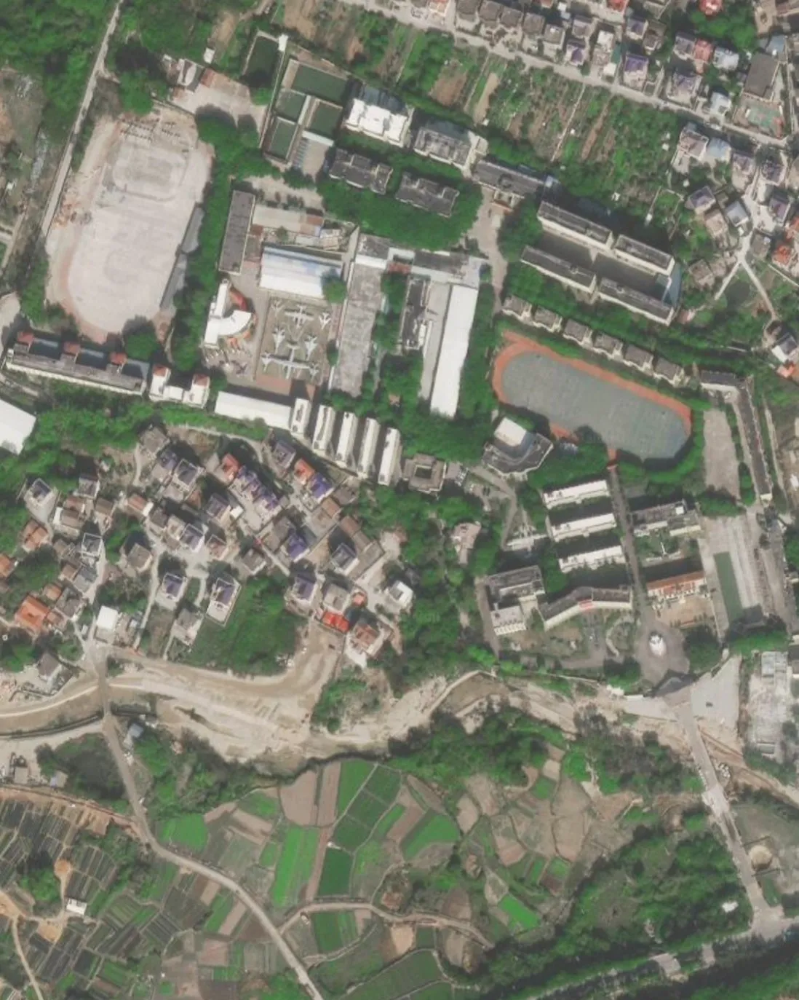
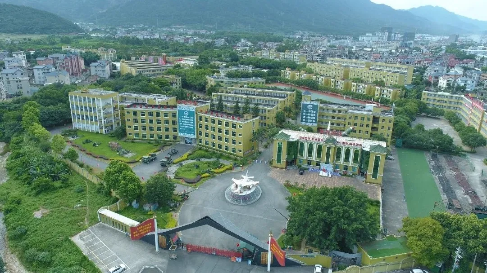
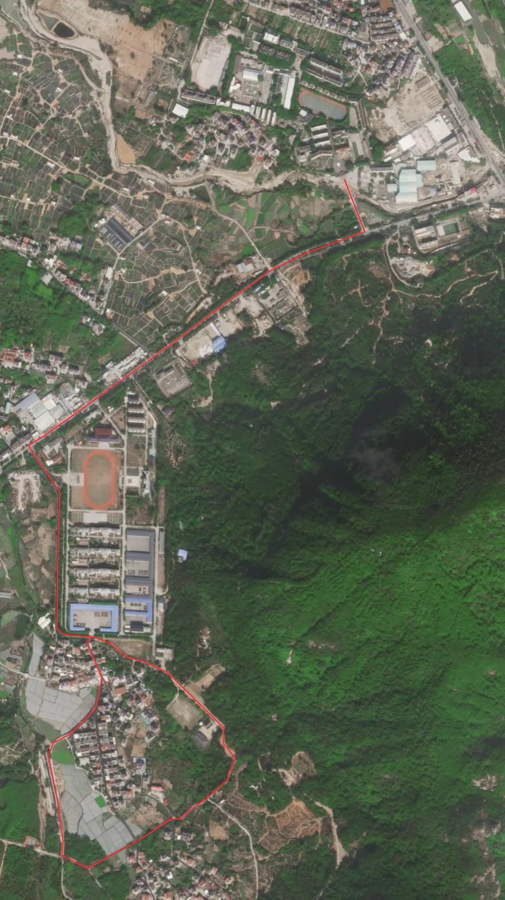
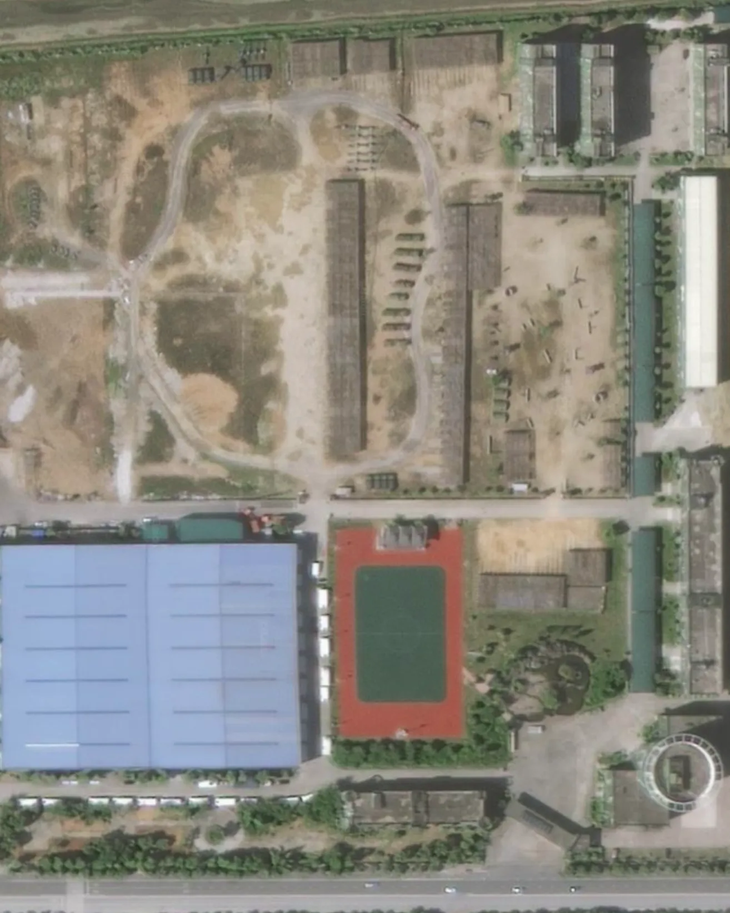

自己结账时由于场面太乱，他不但没付成钱，甚至还顺走了2.5元。
社会实践
该页面为“社会实践”测试版页面。
社会实践
欢迎来到初中的两个特别时期！
五天的社会实践，学生经历了什么？基地的环境和教官如何？
龙翔
没有龙，只有翔。
该基地在学生心中的印象极差，在此地的五日内，大家真正体会到了“军旅”二字的分量。
魔鬼训练：在跺脚声中感受辅导员威严，“军姿十分钟”背后承载的是无形却无比恐怖的压力。特别准备的“60个项目”，场馆的“门票”，在辅导员眼中不过是诱导学生上钩的“鱼饵”。
食堂、宿舍、澡堂……每一栋楼里面都充满原始气息。在龙翔度过五日，生活将被重新定义。
更有沉浸式恐怖主题活动——探秘508。夜晚楼道的每一盏灯、宿舍门后的馒头和钉钉，均为一比一实景打造，只等你来探索。
好不容易熬过了一夜，那句经典已经等候许久：
四十中，起床——
龙翔
爱国有方
虽然名字陌生，但体验相较龙翔显著提升，令人欣慰。
“稍息！军体拳！格斗准备！”伴随着爱国有方名曲的响起，军体拳训练拉开帷幕。作为爱国有方的经典，该项目常在四十中内被提及。
第一天下午就开始了真正的项目，随后更是体验了真人CS、模拟打靶、旱地冰壶等丰富游戏。在爱国有方，坐下不再奢侈、内务不再严格、教官更是让大家非常满意。
猝不及防的降温则开启了“百万撤离”的序幕。医务室的热闹程度和小卖部不相上下，七、八班的合并更是宣告了此次流感的严重程度。
人文方面——上流人士脱颖而出，以实际行动展现富豪风范；徐嘉明一举成名，荣获“玻璃王”美誉。
爱国有方
龙翔
初一| 时间 | 2024年11月19日至23日 |
| 地点 | 福建龙翔国防教育基地 |
| 人物 | 四十中初一、高一学生 |
| 费用 | 515元/人 |
这是九班初中阶段的首次社会实践。
这次社会实践周二才开始，因此周六中午学生才能回到四十中。
福建龙翔国防教育基地，简称龙翔，又称龙翔军旅文化创意园。坐落于福清市镜洋镇甘厝口，占地面积600余亩，较为偏僻。
龙翔在2014年建成，并获得了多个称号：
- 福建省国防教育基地
- 福建省科普教育基地
- 国家国防教育示范基地
- 全国科普教育基地
- 福建省中小学生研学实践教育基地
- 福州市民兵训练基地
尽管荣誉buff叠满，但有传闻说龙翔的环境很差，比如：
- 床单上有尿渍
- 饭里有头发丝
与其说是社会实践，倒不如称其为地地道道的军训。本次社会实践以训练为主，游戏极少（所以以下称这次社会实践为“军训”）。
对此学生给出了初步评价：
龙翔没有龙，只有翔。
那真实的龙翔是怎样的？让我们走进这五天的生活。
准备
龙翔logo
段长占用周四活动课召开了动员大会，方式就是：学生坐在自己班上，电脑开钉钉直播，段长在直播中播放课件并讲解事项。
会上，她告知了此次军训的须知。其中说到，是否允许带零食由各班班主任决定。
会议结束后，刘老师表示允许大家带少量零食，但绝不能当正餐。
年段统一制作了pdf文件，列举需要携带的物品清单和须知。
需要带水桶、背包和行李箱，分别放置以下物品：
| 类型 | 物品 |
|---|---|
| 水桶 | 衣架（6-8个） |
| 晾衣夹（若干） | |
| 干净毛巾（若干） | |
| 洗漱用品（塑料袋包好） | |
| 洗发水、沐浴乳 | |
| 洗衣皂（塑料袋包好） | |
| 洗澡用的拖鞋（塑料袋包好） | |
| 运动鞋（1-2双，含1双白鞋） | |
| 垃圾袋（1-2卷） | |
| 背包 | 红领巾（2条） |
| 水杯（非玻璃杯） | |
| 雨伞 | |
| 口罩（4-5个，塑料袋包好） | |
| 笔记本、笔 | |
| 爱看的书（非小说漫画等） | |
| 朗诵稿、歌词（3份） | |
| 卷纸/抽纸/手帕纸/湿巾 | |
| 风油精/花露水、防晒霜 | |
| 个人药品（如晕车药） | |
| （女生）梳子、女生用品 | |
| 行李箱 | 外穿：外套、T恤衫、卫衣、长裤 |
| 朗诵：班服、白衬衫、黑裤子 | |
| 内穿：睡衣、袜子、短裤、女生内衣 | |
| 可选：台灯/手电筒/枕头/睡袋/大塑料袋（装脏衣服） | |
| 特殊：张雨希/林奕扬带朗诵服装，孔祥懿带横幅 |
所有个人物品要做好标记，并写上班级和姓名；允许带少量现金，但不能带贵重物品。
以上即为文件的大致内容。
周二早上7:15，大巴车已陆续来到四十中门口。
大家带着行李走进了四十中，来到操场集合。场面热闹非凡。
四十中采取先到齐的班先走的模式。各个老师带领本班队伍离开操场，走上大巴；有一些人去了拼车。
大巴上，刘老师带领大家“复习”了一遍《少年中国说》和朗诵台词。
大巴开上南台大道，在福州南连接线高速上行驶；跨过闽江，越过五虎山隧道；出高速，来到镜洋互通，周围是县城的景观：店铺、工厂、电动车、居民楼……来到路的尽头，大巴右转，楼房变得稀疏，景致更亲近自然。车流不多，大巴很快驶进右侧的岔路。岔路看上去宽如同丝带，一眼能望到底。跨过一条小溪，道路尽头逐渐清晰，军旅生活的气味扑面而来。
下车后一片混乱，大家都忙着找自己的行李。刘老师一再强调先随便找一个行李，待会儿再认领，但没人理睬。
另外，杨依诺带了手机，但由于藏得挺严实没被发现；反倒是刘老师在群里发了一条消息，让家长确认没有误把电子产品放进包里，她爸爸向刘老师“揭发”了她，这才被刘老师知道。
四十中军训期间，也有其他学校来此处进行“社会实践”，他们的待遇看起来比四十中好得多。
环境
在龙翔的五天中，前三天都有下雨，第四天是阴天，第五天转晴。气温比较舒适，基本上不会热。但雨天为训练带来了一些麻烦。

龙翔俯视图

龙翔入口
入口
作为“国防教育基地”，入口必须有创意。龙翔的入口以隐形战斗机为设计灵感，在众多基地中脱颖而出。
左右两侧是写着标语的旗帜，来到龙翔的大巴车停在大门右侧的空地上。
大门后面就是龙翔的“门面”——一架货真价实的战斗机。
显然，从入口进入，一直直行就能到小操场、食堂、宿舍等地方，但大家从没从这条路走过。辅导员都会带大家从入口左侧的路去这些地方。
龙翔外的大路旁还有一个看上去荒废的公交站，名为龙翔站，广告牌上写着期待您下次光临。
下车后，只见辅导员站成一排，等候已久。踏入龙翔大门，五天的军旅生活正式开始。
操场
观察发现，龙翔有两个操场。小的就叫操场，大的则是大操场（为区分，下文称小的操场为“小操场”）。
开营仪式、闭营仪式都在小操场举行。这个操场和学校的操场配置差不多，但旗杆是在篮球场靠近主席台一侧跑道的。还有一点令人无语：闭营仪式前，辅导员让大家先在操场坐一会儿，结果有人发现坐了一会儿裤子、鞋子被染绿了，就说操场会掉色！
小操场的主席台上方常年架着个蓝色可伸缩棚，棚上写“福建龙翔国防教育基地”；再上方是用钢铁搭建的军帽结构。
背后的墙壁为深红色，也写着“福建龙翔国防教育基地”，并且墙上还有一面屏幕。
主席台两侧各有一个大功率音响。音响外裹着铁箱，箱门可关闭。

在消防演练时，学生首次到达大操场，当然也只去过这一次。去“大操场”的路上要上一段坡。到达后，只见一片水泥地板，有的还是开裂的；跑道淡到基本看不见，跑道上面还停着各种各样的车辆（都被布给盖住了）。也就是说，大操场其实等同于停车场！
多功能大厅
龙翔有两个大厅，分别为：
| 大厅 | 特有设施 |
|---|---|
| ①号多功能大厅 | 塑料椅 |
| ②号多功能大厅 | 射击道具/人造草皮地 |
两个大厅位于同一个建筑中，中间只隔一面墙。
两个大厅都有舞台，只是风格和作用不同。
①号多功能大厅位于一号食堂前，是同学们常去的地方，用来进行文艺汇演、朗诵比赛等，还是训练的重要场所之一。就算下雨，学生依然可以在里面正常开展训练。
第一天开营仪式结束后，学生就来到这个大厅，辅导员进行事项通知，明确接下来五天的要求，讲到了午晚休、吃饭、训练队伍、装水、去小卖部等方面。
①号多功能大厅的屏幕可以在舞台附近的电脑上进行操控；平常如果有打开，会显示这样的画面：蓝色背景中间有龙翔logo，下方有“龙翔军旅”、一行英文和“国家国防教育示范基地”。
①号多功能大厅的装修比②号多功能大厅精致很多：
- 灯光更亮
- 墙面和天花板清爽、整洁
- 舞台上还有落地的屏幕以及聚光灯
- 舞台前方有蓝色灯带
相比之下，②号多功能大厅更有军旅氛围。但除了第二天晚上的互动环节，学生都只是路过这里，没有真正停留。
从宿舍去往多功能大厅的路种满了树，不过下雨时还是很湿。这也是学生经常经过的地方。
②号多功能大厅旁边就是厕所，这也是学生饭后去的厕所。这里的厕所外部比较“复古”，墙是用水泥砌的。内部类似普通的公共厕所，环境一般。
展馆与展区
龙翔对外宣称有四大展馆和四大展区。
| 展馆 | 陈设 |
|---|---|
| 中国海军舰船馆 | 军舰/潜艇模型、中国海军发展历程 |
| 航天航空模型馆 | 神舟飞船/卫星/战机模型 |
| 国防教育基础馆 | 国防历史/国防法规/现代国防科技 |
| 党建教育馆 | 党史/爱国主义教育 |
“中国海军舰船馆”就位于学生从龙翔入口进入活动区域的路上。场馆的入口其实就是一扇普通的门，上面有场馆的标牌，整个入口都在树荫下。
场馆附近的路旁有一个船只一样的结构，“船”里面是泥土，中间种了一棵树。
去食堂的路上，左侧即为“航天航空模型馆”，从远处看有几层楼高。在场馆和食堂的中间，即为龙翔的四大展区之一——“退役战机区”。
| 展区 | 陈设 |
|---|---|
| 火箭军装备模型区 | / |
| 退役火炮区 | 榴弹炮/加农炮 |
| 退役战机区 | 歼击机/轰炸机 |
| 退役装甲坦克区 | 坦克/装甲车 |
龙翔的一大特点是园区内保存着各种退役装备，大炮、坦克、战斗机，一应俱全，营造了浓厚的氛围。上面都印有：
中国人民解放军海军（空军/陆军）赠
这些退役装备聚集的地方就是龙翔四大展区。展区均为露天，分布在道路旁边的草坪上。
除了退役战机区，军训期间学生还看到了食堂出口的“退役装甲坦克区”和龙翔入口左侧的“退役火炮区”，但没有见到“火箭军装备模型区”。
龙翔不仅有这些展馆展区，还有军事训练区、素质拓展区、野外生存区、真人CS对战区、射击射箭区、科普体验馆等区域。这些区域都没有明确的标识，且一些区域在军训五天内根本没被看见过。
宿舍
宿舍楼的地面是设计成下沉的。因此要到达宿舍，首先得下几阶台阶。下台阶后左右各两栋宿舍楼。
学生住在下图的四栋楼中。
| 名称 | 性别 | 年段 |
|---|---|---|
| 振兴楼 | 男生 | 初一 |
| 尚武楼 | 女生 | 初一 |
| 崇军楼 | 男生 | 高一 |
| 自强楼 | 女生 | 高一 |
左边的楼有6层、右边有5层。
每层楼有两个楼梯口、两侧各有一个厕所、厕所门口有若干水池，走廊有防盗网和晾衣杆。
进入宿舍区域的路左侧为凌云楼，没人知道其作用。凌云楼前有楼梯和红色的“爱国宣言”板块，上面写的宣誓内容即为闭营仪式时宣誓的部分内容。只是第一天学生在此遇见辅导员，快到中午时学生闻到这栋楼附近散发粗饭菜香味。
食堂
龙翔有两个食堂，分别是一号食堂和二号食堂，位于多功能大厅旁边。
二号食堂很大，整体呈长条形。学生都在二号食堂吃饭（下文“食堂”均指二号食堂）。二号食堂的出口前面就是一号食堂。大家除了在里面训练过一次外就没有再进去。而在一号食堂训练的期间，辅导员甚至踩在桌子上指挥训练，可见这个食堂已经不承担用餐的功能了。
水池
龙翔用于接水的水池和四十中几乎一样，一个池子分为一个开水口和两个温水口。水质问题不大，没有出现异物。
这种水池在龙翔的多个地方均有分布，例如食堂出口左转不远处就有一个水池，学生吃完饭或者训练完休息都会在这装水。
最重要的水池则位于开水房中。开水房位于宿舍楼下，从大楼梯走下去的左右两侧各一。单个开水房的结构类似集装箱，有单独的地板和天花板；面向宿舍楼的一面用玻璃隔成墙，玻璃门始终敞开。
开水房内有两个水池。
小卖部
龙翔的小卖部就在尚武楼、自强楼楼下，晚上解散后想要到这里很方便。
小卖部门上有五个大字：军旅服务区。里面不仅有卖零食和饮料，也有一些常用的日用品，例如夹子等。
辅导员说只有在晚上8:00-9:00才能去小卖部，其余时间段去的话就会被驻守在那的辅导员抓住。事实上，四个晚上被安排得满满当当，没有一晚能在8点之前回到宿舍。不过辅导员明面上这么说，实际上只要解散回宿舍，就可以去小卖部，只要在熄灯前一点时间回宿舍就行。
这时，小卖部就会出现拥挤的现象。由于只有两个收银台，结账时一般要排很久队。这种热闹的场面在龙翔属实不多见。由此还出现了一些问题。例如陆梓豪表示：
这里的物价自然高得离谱。下面列举一些物品的价格：
| 物品 | 单位 | 价格/元 |
|---|---|---|
| 矿泉水 | 瓶（500ml） | 3 |
| 方便面 | 桶（常规大小） | 6 |
| 小面包 | 包（散装的一小包） | 2 |
进门左侧还有卖汉堡炸鸡的地方，八块十块是少不了的。质量当然没法和外面买的比，例如汉堡的面包是硬的、再铺片生菜和一个“么么脆鸡排”就是了。尽管价格贼贵，但仍然很受欢迎。
| 物品 | 单位 | 价格/元 |
|---|---|---|
| 汉堡 | 个 | 8 |
| 鸡肉卷 | 个 | 5 |
军训前，段长特意提醒不允许带泡面，但到了龙翔发现这里是允许吃泡面的，于是第一天晚上泡面就被抢光；第二天吃泡面的人数达到顶峰；第三天就被禁止了。原因是这样的：
第二天晚上的时候，由于太多人吃泡面，导致出现了一些“缺德”的情况。当时到处都能看到面饼残渣和汤汁。开水房到厕所垃圾桶、厕所蹲坑都是重灾区，看着恶心。
辅导员
话说龙翔的教官不叫“教官”，而是叫辅导员。在龙翔，“辅导员”是官方的称呼；如果叫“教官”大概是没用的。但耐不住很多人还是叫“教官”，于是这两种称呼在龙翔同时存在。
辅导员穿迷彩服、戴帽子，很容易辨识。
龙翔有专门为辅导员准备的喇叭，辅导员可随时取用。每天叫宿舍里的人起床、集合或者在大厅里“发号施令”都离不开它。其中有一个喇叭上面还贴了很多搞笑的贴纸。喇叭的扩音效果很强，为叫学生起床奠定了基础。
第一天，九班已经集合完毕，但崔宇臣迟迟没有出现，一问发现原来还在上厕所。此时很多班级的学生正在宿舍楼上楼下走动、忙活着，场面热闹有壮观。辅导员拿起喇叭，朝着前方吵闹的宿舍楼大喊几遍：
初一（9）班的崔宇臣！
尽管学生吵闹，但喇叭的声音仍然清晰洪亮，足以被全校听到。
九班辅导员
进入基地后，学生先到宿舍放置行李。在凌云楼旁的空地上，学生首次见到了9班的辅导员。
外貌方面，他的嘴巴突出，被称鸭嘴兽。
他的名字叫王文浩。但学生不知道“文浩”具体是哪两个字，而且顺序也不大清楚，因此有人说他叫“王浩文”。闭营仪式前，其他辅导员还拿他的名字玩梗，喊：
文浩浩文！
拉练时，他说他在新疆当过兵，后来退役来到龙翔；但后来又变成“当武警”和“当警察”。
语言
辅导员各有各的口音。比如喊“一二一”时，有一个辅导员是这么喊的：
一儿一！
因此那个班的学生喊口号时故意将“一二一”喊成“一儿一”。
另一个辅导员则喊成这样：
亚二一！
这还影响到过9班辅导员。一次九班方阵走在吃饭的路上，听那个辅导员喊“亚二一”，不久他也喊成了“亚二一”。
还有一种通用口音，那就是喊“立定”时，辅导员会刻意加重其语气，喊成：
列——丁！
龙翔的辅导员非常喜欢喊某个方阵的名字，例如四十中、初中部、高中部、×班等。被叫到的集体需要喊到！回应。就比如下楼集合时，会出现以下情景：
辅导员四十中？
学生到！
辅导员四十中？
学生到！
辅导员高中部？
学生到！
辅导员高中部？
学生到！
辅导员高中部一、二、三楼，下楼集合！
……
辅导员初中部？
学生到！
辅导员初中部？
学生到！
辅导员一、二、三楼，下楼集合！
（集合完毕后）
辅导员一班？
学生到！
辅导员二班？
学生到！
辅导员三班？
学生到！
……
辅导员感恩的心？
学生到！
辅导员队列方阵？
学生到！
这样的情景，每天要重复很多次。
到了军训的第二天，大家实在忍不了这种无聊的行为。陈睿卓、唐家祺、郑锦熠三人就发明了“新玩法”——别人喊“到”，我喊：
操！
大家很快明白了三人的意思，越来越多人开始喊“操”，甚至推广到了别班。而后这部分学生的应答虽然是“操”，但辅导员却以为是“到”，这事也不了了之。
辅导员的语录数不胜数。如：
吵什么呢！
齐步——回去。
调整军姿！
军姿十分钟，开始！
还有更经典的，比如王文浩的小碎步跺响！、1秒钟跺50下！，军训结束后多次被模仿。
行为
辅导员并非完全平等。在众多辅导员中，有一个总辅导员管理所有辅导员。因此龙翔会出现“辅导员大骂辅导员”的奇观。
论压榨学生，辅导员绝对是专业的。他们喜欢用“钓鱼”战术控制学生。相信大家在龙翔不止一次听过这几句话：
如果今天练得好，明天就全都是玩；如果练得不好，就全都是训练。
明天（下午）训练的时间取决于你们现在的态度。
这一遍练得好就休息，练不好就一直练。
最后一遍练完就休息。
事实上，哪怕同学们练得再好，也鲜有玩的时间。
练得好了，辅导员就会“挑刺”，指出方阵中的部分学生表现差，并让玩的时间泡汤。
刺也没得挑了，就这么做：
（第四晚出来集合）
辅导员说宣誓完就回宿舍，学生听完就认真、大声地宣誓了两遍。谁知宣誓完又冒出个唱国歌环节。辅导员又说：“唱得好就提前解散。”等到唱得好了，又开始练队列（感恩的心）。这样一来，回宿舍的最早时间也自然被推到九点半。
所以千万不要相信辅导员口中的“这一遍”。
在如此压榨下，5天的社会实践变成军训是必然的，且每天的训练时间都达到活动时间的一半以上。
| 天数 | 训练情况 |
|---|---|
| 1 | 下午全部用来训练队列动作 |
| 2 | 上午游戏环节结束后到午餐前训练 |
| 3 | 上午全部在多功能大厅训练 下午朗诵后全部训练 晚上宣誓、唱国歌、训练 |
| 4 | 下午全部训练 |
| 5 | 成果展示前训练片刻 |
除了专门的训练外，学生更是要忍受超长的队伍站立时间，这些时间分布在饭前、回宿舍前、活动结束排队时等各个时段。
说完时间说空间。只要是空地，就可以成为训练场。在龙翔的五天，学生去遍了各种训练的地方。
除了操场，操场右侧的一小块地、操场旁六栋楼房的中间、宿舍楼下、食堂外的棚子都是九班曾训练过的地方。
训练
军训以“班”为单位展开，所有行动必须跟随本班。如要离开班级，必须进行报备。
队伍共有四列，从矮到高排。训练和集合时都按照这个队形站。每次点名，由每列的特定学生清点本列学生并汇报给辅导员。
队列动作训练
队列动作的训练在第一天就开始了，辅导员在宿舍楼下的空地教学动作要领。主要有如下项目：
- 稍息立正、跨立立正
- 停止间转法
- 敬礼与礼毕（含半面向左/右转）
- 齐步走的行进与停止（“停止”后改为“立定”）
辅导员命令如下：
第一项科目：稍息立正、跨立立正。都有，稍息！
立正！
稍息！
立正！
跨立！
立正！
跨立！
立正！
第二项科目：停止间转法。都有，向——右——转！
向——右——转！
向——左——转！
向——左——转！
向——后——转！
向——后——转！
第三项科目：敬礼与礼毕。都有，半面向左——转！
敬礼！
礼毕！
敬礼！
礼毕！
半面向右——转！
第四项科目：齐步走的行进与立定。都有，向——后——转！
齐步——走！一二一，一二，立定！
向——后——转！
向前，对正！放！
齐步——走！一二一，一二，立定！
向前，对正！放！
此外还有站军姿、向前对正和原地踏步走。
站军姿是最频繁的项目，王文浩动不动就会让大家“军姿十分钟”，起初有一个人动就多站一分钟，后来一个人动直接加五到十分钟。当然这只是噱头，实际不会站这么久。
军姿的要求十分严格，比较经典的有这几个：
- 脚跟并拢、脚尖分开约60度
- 收腹挺胸、身体前倾
- 双手紧贴裤子、中指贴于裤缝
辅导员要求齐步走时不要那么直，就跟日常走路一样。王文浩要求，喊“齐步——”时需身体前倾，否则就回去重来。于是有：
齐步——回去。
在日常齐步走时就没有这么严格的要求，但王文浩会在走的时候时不时这么喊：
辅导员一二一！
学生左右左！
“左右左”对应着左脚和右脚。这么做的目的是让大家保持齐步走的节奏，知道现在要踏左脚还是右脚。
还有别的口令，像这样：
辅导员一！二！三！四！
学生一二三——四！
辅导员一二三——四！
学生一二三——四！
或者是：
辅导员一二！三四！
学生一二！三四！
初到龙翔时辅导员就要求：凡是齐步走时经过老师，就要有一个带头的学生喊老师好，然后方阵中的学生跟着喊老师好；经过辅导员时则喊辅导员好。
王文浩喜欢在①号多功能大厅外的棚子那里进行训练，这也是9班饭后集合的位置。王文浩会让大家把水杯和雨伞统一放到前面，然后开始训练。
选定这里的原因很多。最关键的是这个地方不怕下雨。棚子连成一条，适合专门进行齐步走的训练。因此也有部分班级在棚子下进行训练。
虽然压力大，但并非完全没有休息时间。王文浩会偶尔让大家坐下休息五分钟，这时可以由几个代表拿着要装水学生的水杯到不远处的开水房统一接水。其他学生可以聊天，有时还会从口袋里拿出糖吃。
靠近食堂，还有一个与之平行的棚子，向右延伸至食堂门口。王文浩也在这里训练过，并让别班辅导员临时看管。
另外，龙翔有评选优秀标兵。在第一天训练时，王文浩看大家军姿站得太差，就告诉大家自已已经有优秀标兵的候选人了，徐嘉明、薛阅晨等人被他看中。后面几天王文浩便不再提起这事，直到第五天的颁奖仪式，优秀标兵上台领奖，分别有：
- 王淮
- 徐嘉明
- 倪浩宇
- 钱尚恩
- 孔祥懿
- 郑诗语
有没有发现上面没有提到跑步？其实在龙翔几乎没有跑步这一项目。唯一的一次，高中的学生因为站不好而被罚跑了一两圈。九班也因为站得太差而被威胁罚跑，但最终没有跑。
当然，龙翔的特色还得是声音。
声音
凡是要动脚的动作（齐步走除外）跺脚声必须响亮、有气势——这也是评价学生表现的重要指标之一。
最能体现该要求的动作是向前对正，跺不响就一直跺。王文浩曾说过，大家只需要使劲跺就行，地板坏了他会赔。
极端的要求造就了王文浩的许多名言。他经常喊：
小碎步跺响！
甚至有：
1秒钟跺50下！
第四天下午，队列方阵统一在操场旁边一块下沉的水泥地进行四个科目训练。此时恰逢其他学校在操场举行闭营仪式。辅导员就告诉大家：要有这样的声音和气势，希望等一下到操场训练时也能听到如此响亮的声音。
当那个学校离开操场后，学生来到操场进行训练。对于大家的表现，辅导员很是不满意。这时有在文艺汇演中上台表演的学生正在大厅里排练。于是辅导员就威胁：
如果练不好，晚上的晚会就不要看了。表演的人还是正常表演，你们就在操场上训练。
另外，礼毕时要有拍裤子的声音、齐步走时要有划过衣服的声音。
闭营仪式排练
到了第三天，训练的项目出现了“分化”。为了圆满地举行闭营仪式，大家分成了四个方阵进行训练：
| 方阵 | 展示项目 | 归属 |
|---|---|---|
| 队列 | 队列动作 | 初中部 |
| 感恩的心 | 《感恩的心》手语操 | 初中部 |
| 国家 | 《国家》手语操 | 高中部 |
| 炮排 | 放炮 | 高中部 |
9班位于队列方阵。该方阵的展示内容其实就是训练的内容，即稍息立正与跨立立正、停止间转法、敬礼与礼毕、齐步走的行进与立定。
炮排是唯一一个配有道具的方阵，放炮主要是为了增添氛围感。

“感恩的心”方阵成果展示
吃饭
饭前
去食堂的路线大概是这样的：从宿舍楼出发，走到多功能大厅右侧的道路，转弯到达旁边有五栋楼的那条路，再右拐，从那棵大的树旁进入食堂。
想要进入食堂，只能从这条路走——因此每到饭点、这里必然拥堵。之所以如此，是因为辅导员有一个习惯，走一段就得停一段，然后向前对正。
这种频繁的对正是不分情况的。哪怕前面很长一段路没人，照常要这么做。有一次：
九班第一个走向食堂，前方空无一人，但因为频繁的对正，导致迟迟不能开饭。
如果说第一个辅导员创造了拥堵，后面的辅导员则加剧了拥堵。后面的辅导员并非紧跟前面班级的步伐，而是有自己的“节奏”。正常来说，前面班级开始踏步，后面一个班级也会做好准备；然而有时候会出现严重的“延迟”。
而这条路属于“单行道”，只容得每个班排队通过，因此不可能超过前面的班级通过。
有几次去往食堂是下雨的，这时就得站到旁边避雨。
食堂外墙有用铁皮做的棚，远没有常规的道路宽。学生就得躲在这里，拥挤是必然的，队形更别想维持。每隔一段路还会有一棵树，加剧了拥挤现象。不过这有利于学生观察食堂内的情况（有窗户）以及聚在一起聊天。
棚的末端有支撑的杆子，杆子顶部就是关于军事装备的科普连环画。每幅画都图文并茂，展示了各种设施的构造，画幅不大，连环画的数量也随之增加。这些画分为多个部分，系统地讲解了航母、潜艇等。
中午或晚上到食堂，入口都会摆放着几箱水果。到这里时，两列学生需向前走，一人拿一个水果；然后另外两列跟上去拿。拿完后，需到门口的水池洗手，学生往往只是淋一两秒就走。
每餐的水果是随机的，但总共就三种：
- 橙子
- 橘子
- 苹果
许多人不大爱吃，他们的水果就会出现在其他学生或辅导员手上。
做完这些，终于可以进入食堂了。
左侧是打饭窗口，共八个。窗口前的地上贴着一米线，排队时需保持距离。还有两个打汤窗口，打汤是可选的。
右侧是餐桌。龙翔的桌面是塑料的圆桌，一桌坐八人。辅导员要求一桌只能坐同一个班的学生，导致打完饭后时常发现前排的桌子被别班占领，只能端着餐盘走来走去，寻找座位，不大容易。
饭菜
饭菜的味道一言难尽。第一天午饭时，同学们都说米饭很黏，不好吃；第三天早饭时，同学们推测豆浆是用粉泡的，因为从汤桶最底下打的豆浆没有豆渣。
辅导员说可以加菜，但像鸡腿这样一人只能有一个的菜不能加。几乎没人主动加菜。
不像传言中的那样只有“馒头配萝卜干”，龙翔的早餐花样还是挺丰富的，一个鸡蛋是标配，另外还有两道小菜，例如：
- 面筋
- 榨菜
- 萝卜干
主食则是馒头、包子等。有一天早餐的黄色三角糕味道尤其不错。因此，一些人说早餐是三餐内最好吃的了。
但另外两餐就不一样了。首先，菜品有荤也有素：
- 青菜
- 花菜
- 豆芽
- 包菜
- 西红柿炒蛋
- 卤鸡腿
- 鸡块
- 蛋饺
- 荔枝肉
- 狮子头
- ……
不过这里的一些菜表面都裹了一层粘稠的汤汁，看着没食欲；而午餐和晚餐时都会有一块饼，荤的素的都有可能，食堂阿姨会直接将饼放到饭里。
学生对午晚餐的评价几乎全是差评，这种评价的最能体现在倒剩菜的桶里。
龙翔准备了很多个桶，用来承装剩菜剩饭。不过在第二天晚上：
走出食堂，最里面几个桶已经满出通口。剩菜剩饭不断往上堆叠，堆出了小山般的尖角。潮湿粘腻、裹着汤汁的米饭不是往下滑落。
虽然大部分桶没有被装满，但桶中五彩斑斓，别有一番独特的风味。
学生陆续端着盘子出来。不少人的盘子里还满满当当，出门后将剩菜无情地倒入桶中，剩饭落下的粘腻声、饭菜撞击桶壁的空洞声、洗放餐盘的金属声汇聚一起。
一些人表示那顿饭是五天中最难吃的。还有一些人说，当时看到这一幕时差点吐出来。
饭后
龙翔的洗碗机是自动的，但特别脆弱。在讲用餐要求时，辅导员告诉大家：哪怕是一个饭粒也可能导致洗碗机被卡住。因此餐盘的善后处理至关重要。
| 步骤 | 说明 |
|---|---|
| 倒剩菜 | 食堂出口和入口分开，出口摆着很多蓝色塑料桶，学生的剩菜都倒在这里，这能解决大部分剩菜。 |
| 洗餐具 | 龙翔的餐具包括金属餐盘和金属勺子（没有筷子），倒完剩菜后会出现食物残渣黏在餐具上的情况。这时需走向旁边的水池进行简单清洗。清洗的目的是冲掉固体残渣，盘子上的油渍则无需关心。 |
| 放餐具 | 不远处就有蓝色箱子和金属盆。学生需将餐盘整齐地码放在箱子里、勺子扔进盆中。 |
处理完毕，就要到指定位置集合。在所有学生到齐前允许进行装水、上厕所。
晚上集合时通常在下雨。道路泥泞，透露出寒意。这时也发生过一些插曲。
第三天晚上，福清一中的一个学生和陈睿卓搭讪；同时多功能大厅内播放猪猪侠主题曲、《青花瓷》、《感谢你曾来过》等。
学生大概到齐后，辅导员会来到集合点，学生进行点名。所有人到齐后，辅导员带队开始接下来的活动。
项目
辅导员声称龙翔有60多个项目。在军训期间，大家也看到不少场馆，例如海军船舰馆、航天航空馆。
辅导员“明确”了在龙翔的制度：
五天内的活动分为训练和玩，两者相互穿插，玩的时间由训练的表现决定。练不好就别玩，练得好甚至可以整天都在玩。
不过进入场馆是需要门票的，门票在辅导员那里，根据学生的表现发放。
讽刺的是，9班一个场馆都没去过，更没见过龙翔的什么“门票”。5天内，9班只体验了这些：
射击
龙翔有真正的射击项目，甚至有真人CS的场地。但同学们只能玩低级的射击——枪是看得见摸得着的，但射击的目标是电脑屏幕上显示的。游戏界面为10个瓶子和一个移动的屏风。有10次射击机会，目标是尽可能击碎更多瓶子。
设备就几台，所以学生要排队体验，排队的人就坐一个塑料板凳。
很多人实操后发现弹道偏左，甚至还有连发的现象。
VR
实际上VR、射击、穿越火线都在一号食堂楼上，只不过用一面墙把射击和另外两项的场地隔开了。第二天晚上，辅导员让没体验的班级去体验VR，到达后照样坐着塑料凳排队体验。
龙翔有两台设备，一台可同时供4人体验。9班到达时，两台是分别给两个班级体验的——因此一次体验的人数固定为4人。
VR的场景有三款，都是“过山车”场景。王文浩让大家转过去不要看，防止大家看到画面失去新鲜感，但还是阻止不了同学们偷看。
体验完后，9班来到②号多功能大厅。此时没有体验的班级正在跟总辅导员互动，9班参与了“猜口袋里有没有东西”、“每班请人表演《金龙拍拍操》”两个主要环节。
穿越火线
听着挺高大上，实际上是科技馆里的常客。因此学生对这个项目的体验感不高。
一共两台机器、八个体验装置。八名学生同时体验、排队进行。
每人只有一次机会，因此体验的过程非常之快，很多人没碰几秒就游戏失败。
游戏
多功能大厅门口的空地是第二天上午的游戏场地之一。学生在这里体验了两个项目，但性质和“穿越火线”一样。辅导员将一箱道具拿出来时，吐嘈声此起彼伏。
有多个班级同时在这里体验这些项目，每个班级占用一块地，互不干扰。
四平八稳
学生手持一个有五个孔洞的圆盘，用圆盘拖着小球，跨越障碍物到达终点，避免小球掉落。
每个班有两份道具，供两个人同时体验。体验完或没体验的学生就坐在板凳上等待。
珠行万里
学生手持半圆形PVC管拼接成通道，让小球在管中滚动传递，直到落入终点容器，过程中球不能落地。
这也是小学社会实践时的经典项目，大家几乎都体验过，因此有人评价这个游戏“很幼稚”。
这个项目分4次体验，每个学生都有一次机会。虽然大家都说幼稚，但体验时还是有一定的参与感。

VR

珠行万里

穿越火线
观影活动
军训前不久上映了一部《志愿军：存亡之战》。于是第一天晚上，全体学生就到①号多功能大厅观看了前作《志愿军：雄兵出击》。但看了一半就因为时间太晚而被暂停了，辅导员让大家“有兴趣回家看”。
九班坐的位置离屏幕最近，因此观影体验是最好的；不过在九班旁边的音响声音很刺耳。观影时，一些学生在聊天或做其他事情。
消防演练
第二天早上集合后，辅导员通知事项，然后大家就回到宿舍准备消防演练。警报声响起，学生用毛巾捂口鼻撤离宿舍。
龙翔为此贴心地准备了烟雾（烟雾还很熏人），氛围感十足；当然学生仍有在说笑的。撤离到楼下，立刻有辅导员让大家就近蹲下，撤离得差不多了就找到本班队伍排队，准备到大操场进行灭火器实操。
然后的安排使学生对龙翔的印象更差了。所有班级的方阵围成一圈，前面摆着个铁桶，里面有燃烧的木柴。然后让每个班派一位代表体验灭火器，其他人就只能远远看着。于是学生第一次开始集体吐槽龙翔：
有120个项目！
我都不知道龙翔怎么赚钱！
玩得太开心了！
饭菜健康又美味。
两天就把120个项目都玩完了！

学生只能在远处看
看一看四十中官网。官网记录了不仅写了初一、高一在龙翔的见闻，还有初二、高二在幸福庄园的活动。在幸福庄园的介绍中，详细讲解了茶艺、农耕、香道、葱饼与豆浆制作、证券知识讲座、电工与木工实践、法政馆参观等项目，每项单独成段、配有图片；而对龙翔项目的介绍：
研学期间，基地组织的消防演练、徒步拉练、真人CS活动、军事射击、观影等联欢活动丰富了学生的体验，给学生们留下了美好的回忆。
这一段非常简略地概括了学生在龙翔的趣味活动，侧面说明了龙翔的活动真的没什么可写的。
住宿
来到宿舍楼下时，宿舍的安排就已经分配完毕——这可惨了一些人。
黄恩亚、蒲林豪被分配到同一宿舍。该宿舍的人顿时怨气冲天，冷静下来后表示：黄恩亚必须洗澡！
对于蒲林豪，大家的评价是：“蒲林豪不臭。”说罢，蒲林豪就上前闻黄恩亚的衣服。学生：“现在臭了！”
基本情况
女生的宿舍楼白天有男辅导员，晚上是女辅导员。
龙翔的厕所环境居然比四十中还好，每个隔间都可以正常锁上，且高度足够，看上去干净整洁。厕所外面是多个水池，这也是学生洗漱的地方。
宿舍也这么好吗？我们先看配置。
一间宿舍有两扇窗，其中一扇连接走廊，这扇窗旁有晾衣架。
宿舍里空调、风扇齐全，不过没有看到打开的方式。
左右各3个上下铺，共计12张床，使宿舍看起来比较拥挤。
辅导员曾经说：
不要在床上吃零食，不然会招惹小动物。
这种现象很罕见，没有人公开反映宿舍有“小动物”。
床
初到龙翔时是没有床单、枕套和被套的，只有被芯和枕芯，需要在开营仪式后到一楼统一领取。它们合称三件套。
传言中的床单尿渍不知真假。从外表上看，三件套是经典的军旅绿色，表面相对干净；但凑近看就发现不对劲了，举个例子：枕套使用魔术贴封口的，而魔术贴的表面看上去自然不咋地。
到龙翔的第一天，辅导员带大家了解了内务相关要求，随后到台阶旁空地教学被子的叠法。龙翔的被子也因为其叠法的特色而被称为“三折被”。后来在四十中，就有一些人用眼镜布、餐巾纸等物品叠出迷你三折被，可见其非常经典。
当时的场景是这样的：地上铺一草席，辅导员脱鞋站在草席上，一遍遍地向不同批次的学生讲解三折被叠法。周围学生围成一圈，水泄不通，不时传来起哄的声音。值得注意的是，有人发现被芯有黑点，大喊“发霉了！”然后就被辅导员“制裁”了。
龙翔已经玩转了“自动化”。除了动不动卡住的洗碗机，龙翔的洗涤房间更是像极小工厂的流水线。闭营仪式后，辅导员让大家拆下三件套，随后带领大家来到多功能大厅旁一个不起眼的房间，里面摆着几个比人还高的洗衣机，透过圆形玻璃可以看到很多正在清洗的三件套。洗衣机运行的声音很大，走近时还能感觉到热气。洗衣机旁是小山一般的三件套，有的放在三轮车上，有的干脆堆地上。同学们就把自己的三件套扔在这几堆上面，扔完就可以走了。
床是用铁架支撑的，因此稍微动一下就会吱吱作响。
床板是木制的，且质量参差不齐。大部分床板从外观上看是完整的，但有些就不一样了——到处都有开裂。这时要么牺牲睡眠体验，要么去找辅导员换新床板。
内务
领完三件套，回宿舍后就开始龙翔的第一个项目——内务整理。
龙翔对内务要求严格。床单无褶皱是基本要求，对物品的摆放位置也有一番规定：叠好的三折被需居中置于床头（定义朝门的一侧为床尾），枕头平放于上方。
书包也放床上。但不同辅导员对放置的位置产生了分歧。一个辅导员说放床尾靠墙的一侧，王文浩却要求放中间。
辅导员不要求被子跟军队里叠的“豆腐块”那样棱角分明，但至少得有个大概。学生忙活半天，到时间后辅导员一间间检查。自然每间能合格的就那么一两个，其他人就挨批去。每次午晚休后辅导员都会进行例行的巡视，要求也没那么严苛。
水桶统一摆放在左侧床底，行李放右侧床底，且需要摆成“一条线”，也就是要对齐。
鞋子统一摆在走廊靠宿舍一侧，拖鞋和宿舍外穿的鞋都一样——也是摆成一条线。
垃圾桶摆在门外，每次下楼集合，指定的宿舍长需倒垃圾，同时挨着厕所的宿舍得把厕所灯关了。如果辅导员发现没关灯，通常相应宿舍也要挨批。

鞋子摆成一条线

辅导员教学三折被叠法
上面这些就是内务的基本要求。大多数时候检查不合格也就是私下批评教育；但有一次发生了戏剧性的一幕：
第三天，学生在①号多功能大厅进行队列、感恩的心训练。辅导员忽然让大家转过去坐下，要给大家一个“惊喜”。
接下来就是史诗级的一幕——只见宿舍的照片被投放到大屏幕上，并有标注是哪栋楼的哪间宿舍，引起一片惊呼，不少人说自己的宿舍肯定不合格。
照片不仅有宿舍内的，还有走廊的鞋子。辅导员开始一一询问照片中宿舍的宿舍长以及未按要求放置的物品是谁的，问完之后切换下一张。相关人员被罚到台上站着；不够站了干脆直接站到方阵里。途中有一个台上的人找地方坐下了，还挨了批评。
总体来讲，龙翔的内务要求如下：
| 项目 | 要求 |
|---|---|
| 床单 | 无褶皱 |
| 三折被 | 叠出大概并置于床头 |
| 枕头 | 平放于三折被上 |
| 书包 | 放在床上特定区域 |
| 水桶 | 摆放在左侧床底、对齐 |
| 行李 | 摆放在友侧床底、对齐 |
| 鞋子 | 沿靠宿舍墙边摆成一条线 |
| 垃圾桶 | 下楼前倒掉 |
| 厕所灯 | 下楼前挨着厕所的宿舍关闭 |
人文
龙翔的传说
9班流传的主要传说有二：508和辟邪馒头。
508
龙翔的宿舍门上、床板上总会有学长学姐留下的提示，大家乐此不疲地看着。这些文字一般是留给学弟学妹的“指南”。但其中，一个传说脱颖而出，火爆全班。
某间女生宿舍的门上写了一件事：尚武楼的508宿舍曾死过三个人。事件的核心是这样的：
睡觉时，一个人从上铺摔下来，脖子着地，当场死亡；另外二人被龙翔后山来的熊咬死。
值得注意的是，传说中的“熊”一说为“老虎”。老虎的说法在班上流传更广，但熊的说法更接近传说。
起初这件事在女生宿舍传播，后来孔祥懿传给倪浩宇，倪浩宇很害怕——这样使得男生宿舍也知道了，也标志着传说在全班的广泛传播。
一晚，306的男生集体分析和推理508事件背后的真相，但这次谈话的过程和结论石沉大海。
集合时也有人在谈这件事，随之而来的是各种衍生的传言：
- 22年时这件事曾上过新闻
- 以前门后有一张符咒，有人撕了之后，3个鬼就杀了她们
- 一个晚上，508的两人移到其他宿舍，次日就有一个人死了
- 逢3、6的年份，508就会死三个人
虽然这些传言流传得并不广，且不符合传说，但激发了大家的好奇心，有人就说回家的第一件事就是在百度上搜索508。
据说女生宿舍的窗外还能看到教堂，于是也和这件事扯上了关系，产生了一些猜想。
这件事如此匪夷所思，令人怀疑其真实性。果然离开龙翔后，这件事很快被辟谣，龙翔根本没发生过这些事，但这也成为龙翔的一大代名词。
辟邪馒头
说到老虎，就不得不提到振兴楼306的馒头。
大家刚进入宿舍时，就发现门后有一块馒头，据说可以预示老虎的到来：如果馒头变黑，就说明有老虎！
在龙翔，“老虎”神出鬼没，说不定哪天就到了床下。于是这个馒头也被“重点保护”起来，又名馒头仙人。
结果第四天时馒头被辅导员发现了。辅导员表示，在四十中到来之前他们都有检查宿舍，压根没发现什么馒头，让直接扔掉。大家很着急。幸亏颜哲铭弄了一个铁钉，叫做钉钉仙人。如果钉子倒下，说明老虎来了，就这样“保住了全宿舍的安危”，这也是龙翔的代名词之一。
在老虎的气息弥漫整个基地的情况下，又发生了一件小事：
一次午餐，崔宇臣在饭里吃出头发。学生调侃：这是“老虎的胡须”。
其他人文
郑欣甜等人编了一首《恩亚歌》：
恩亚歌
恩亚很帅！
恩亚很酷！
恩亚很白！
恩亚很奶！
回头看！
恩亚怪可爱！
他人也不坏！
李梦妍、林芷琪、方欣妍等女生经常说：
我有一颗单纯的心~
方欣妍、杨依诺、俞昕辰这对三姐妹常被提起。
振兴楼发生过这些事：
- 蒲林豪不穿内裤
- 晚上，黄恩亚的被子中部上下起伏，令人产生联想
- 崔宇臣（睡在下铺）发现上铺有白色粘稠液体留下来，其实是奶茶
- 郑致辰爬到别人床上被“误伤”，被打出鼻血
杨依诺晚上讲鬼故事。
集合
龙翔大概晚上十点熄灯，早上六点起床，因此睡眠时间是比较充足的。熄灯后，宿舍里的人总是会聊天甚至吃东西。辅导员会来个“突击检查”。有一次振兴楼3楼的部分宿舍吵闹，还被辅导员罚站到走廊。
除了晚休，龙翔还设置了午休。
龙翔要求学生睡觉时必须盖被子，这点在第一天就已经公开讲过，辅导员也会顺便检查和督促。
如果有突发情况，可以去找本层楼的辅导员。可以直接推门进入，如果辅导员已经睡着可以直接叫醒。
想要上厕所可以自己去。
天快亮时，部分学生会开始活动起来。
起床时，楼下就会有辅导员拿喇叭喊：
四十中，起——床——
声音在龙翔上空回荡许久，令人难以忘怀。回到四十中后，学生常常在下课（午休结束）后喊这一句话。
喊完后，每层的辅导员就会去每间宿舍叫学生起床。
起床后就该整理内务和集合了。集合时得先到走廊站好，辅导员例行检查内务；然后就是不停地喊“到”，并陆续下楼。
所有班级都站在宿舍楼之间的空地上，每排站五个班级，班级之间仅留有约一人的空隙。
班级的站位顺序为（学生视角）：
从左到右，从前到后，初中部在前。
因此九班位于第二排、第四列，站位靠近崇军楼。
辅导员明确规定：
下楼必须带水杯；下雨必须带雨伞。
训练时，水杯（雨伞）要么统一放前面，要么就放在自己的旁边。
拿水杯也有动作要求。当辅导员下令拿水杯时，不管你有没有带水杯都必须弯腰，辅导员说起立时才能站起来。
晚上回宿舍时有体温测量环节。每列依次测量，测量完的学生可以回到宿舍，准备洗漱。
洗澡
吃完晚饭后，辅导员会组织大家回到宿舍，此时就是每日洗澡的时间。洗完澡后，学生再次集合，进行晚间活动。
洗澡是自愿的，辅导员会不停用喇叭喊：
要洗澡的同学，带上雨伞和工具，到楼下集合！
想要洗澡，必须带上水桶，桶里放衣服、洗发水、沐浴露等洗澡工具。
到楼下后需排成两列，由辅导员统一带走；如果雨下得很大就不需要排队，直接可以走。
刘老师要求每天都要洗澡，声称“不洗澡要扣量化分”，当然实际上没有扣。每天晚上，刘老师会去每间宿舍（包括男生宿舍）巡视，看到有9班的人就问有没有洗澡。可以糊弄过去。
道路
澡堂离宿舍很远，经过食堂后还要再走一段路，每次洗澡需要走的路程很远。
前三天或多或少都有下雨，必须带伞。这就会出现以下情况：
| 原因 | 结果 |
|---|---|
| 雨天 | 易淋雨 |
| 路程长、路面坑洼 | 多积水/泥泞路段 |
| 穿拖鞋 | 踩水坑易湿脚 |
| 携带物品多 | 行动不便 |
去洗澡的路上还好，回来的话必须更加小心，稍不留神，身上就会被泥巴、雨水等弄脏，脚部更是重灾区。加上洗完澡后的晚间活动，洗澡的效果大打折扣。
进入澡堂，里面热闹非凡。
澡堂外部为玻璃门，进入后左边和右边各有一条通道，通向真正的澡堂。
进门两侧的地板有一定的空间，可以用来放伞。很多雨伞随意摆放于此，不过相比里面的衣服架子，雨伞更容易认领。
放完伞即可走进浴室门口，拐角处有放衣服的架子。架子上乱七八糟，各种衣物随意堆放，容易弄混、弄丢。因此绝大多数人不将物品放到上面。
再往里走——场面好不壮观！
内部
龙翔的澡堂为公共浴室，直接降低了洗澡时的舒适性和隐私性。
每个区块的澡堂共四排，对应着两个过道。每排分为若干隔间，隔间与隔间间使用铁板分隔。隔板左右和下方都有空隙，下方的空隙尤其大。
女生澡堂和男生澡堂在布局、配置、环境上相差不多。
隔间与过道仅由一层白色的帘子间隔，帘子像窗帘一样拉开。帘子具有这些缺点：
- 薄——似乎风一吹就会开始飘扬，一拉就开
- 小——帘子拉上时，从外面可以直接看到里面人的小腿
- 脏——帘子是白色的，污渍清晰可见
有的帘子还是坏的。
因此洗澡时必须保持高度警惕，防止有人突然掀帘子。帘子外此起彼伏的笑声、喊声、谈话声使人倍感压力，只有迅速洗完，才能最大化降低风险。
事实上，掀帘子的案例时常发生。外面晃悠的人可能正在寻找目标或找到目标准备下手，也可能聚在一起准备看笑话，几乎不会是心怀好意的。
更有大型猎奇现场的出现，比如曾发生过：
- 四个人在男生澡堂的同一隔间洗澡
- 有人边洗澡边拉屎
- 有人洗澡时发现蜘蛛
隔间的墙上贴有冷水和热水的标志；花洒是手持的。
在龙翔，花洒使用人数和水温、水量成反比，且靠里面的隔间水温通常比外面的高。花洒有好有坏，甚至有的直接装个水龙头。
总之，龙翔澡堂环境乱、场面乱、物品乱，一团乱。
大型活动
班班有朗诵
在军训前，各班就已经开始紧张地排练班班有朗诵了。
第二天下午，全体学生到①号多功能大厅熟悉了一下流程。
每个班级轮流上台，明确站位。老师和辅导员在台下进行指导。大致站好后需要试着朗诵几句，完毕后即可下台。
此时，龙翔的舞台上摆着一个铁皮制作的阶梯，学生朗诵时站上阶梯就都能露出头来。
第三天下午是正式比赛。九班坐在大厅左边的最后面区域。
9班朗诵的内容如下：
我想带您看盛世中国
领诵：孔祥懿、郑诗语、王淮、倪浩宇
奕扬姐姐
你是从哪里来的？
雨希我来自新中国
奕扬那
我们胜利了吗？
雨希胜利了
奕扬太好了 我真想看看
新中国是什么样的
雨希来
我带你去看看我们的新中国
允儿五星红旗迎风飘扬
胜利歌声多么响亮
歌唱我们亲爱的祖国
从今走向繁荣富强
永泽（挥舞国旗）
祥懿为实现中华民族的伟大复兴
我们
全体准备着 时刻准备着
祥懿 诗语您看
清澈的爱只为中国的民族精神
王淮 浩宇您看
犯我中华者虽远必诛的民族气节
祥懿您看
脱贫攻坚 全面小康
千年梦想 今朝实现
诗语您看
嫦娥探月 蛟龙深潜
大国正气 世人惊艳
王淮您看
生态文明 绿色低碳
美丽中国 展开画卷
浩宇您看
一带一路 互通互联
和平发展 合作共赢
全体您看
人民幸福 民族振兴
祥懿 诗语这民族如您所愿
全体潜龙腾渊 鳞爪飞扬
乳虎啸谷 百兽震惶
王淮 浩宇这国家如您所愿
全体奇花初开 矞矞皇皇
领诵这盛世如您所愿
全体前途似海 来日方长
祥懿我想带您行走在彩虹里
全体那是北斗卫星
在指引我们前行
王淮我想带您去新农村做客
全体那里的土地
正翻种着时代新绿
诗语我想带您走进新科技园区
全体灿若繁星的
高科技让未来触手可及
浩宇我还想带您去祖国各地
看锦绣河山 春光万里
左半看万山红遍 层临尽染
漫江碧透 百舸争流
右半看同学少年 风华正茂
书生意气 挥斥方遒
祥懿 诗语七十五年斗转星移
七十五年大江东去
左半盛世中国
告诉您一个地球的惊喜
盛世中国
告诉您一个东方的奇迹
王淮 浩宇七十五年春华秋实
七十五年日新月异
右半盛世中国
告诉您一个人间的传奇
盛世中国
告诉您一个时代的瑰丽
领诵七十五年波涛之上
七十五年征帆万里
全体盛世中国
告诉您一个公开的秘密
盛世中国
告诉您一个永恒的真理
解放思想 实事求是
发展才是硬道理
祥懿捧起地球村崭新的履历
盛世中国
一步跨进未来的行列里
王淮这是十四亿颗心跳
迸发出的幸福奇迹
这是十四亿双脚步
追逐梦想的火炬接力
祥懿 诗语赞美你呀
辉煌七十五年
全体盛世中国 蓬勃日出
王淮 浩宇讴歌你呀
奋进七十五年
全体盛世中国 和平崛起
祥懿七十五年沧海桑田
中华民族 正行走在
伟大复兴之路上
王淮七十五年春潮不息
亿万中华儿女
正信心满怀
扬帆进击
领诵高歌迈向
全体高歌迈向
高歌迈向
新的胜利
奕扬姐姐
新中国真好啊
雨希因为有你们的牺牲
才有我们现在的新中国
奕扬不
不止我
还有很多很多人
雨希我知道
我们不会忘
祖国不会忘
全体我们不会忘
祖国不会忘
奕扬真好啊
新中国的未来
就交给你们了
雨希请您放心
山河已无恙
吾辈当自强
全体请您放心
山河已无恙
吾辈当自强
当自强
到了别班朗诵时，大家发现很多班级的台词甚至背景音乐和9班重叠了部分，于是就说别班“抄袭9班”。
有的班级制作了视频作为背景。刘老师也制作了这样的视频，但辅导员连续两次提前播放视频，导致画面和音乐变得与朗诵有点违和。
徒步拉练
这是第四天的“重头戏”之一。早上，全体学生到操场集合，辅导员讲解注意事项。然后学生从多功能大厅那边的路走起，轰轰烈烈的拉练开始了。
要求如下：首先，必须带水。没有水杯的人第三天晚上去小卖部买。为什么呢？
辅导员又说，这次拉练有四公里，包不包含返程也不知道。事实上，这次徒拉练共有六公里左右，一些人称其为“长征”。

其次，不要落单，班级之间不要有间距。
徒步拉练的路段在龙翔外，因此大家会暂时离开龙翔。学生仍然以班为单位，只不过排成两列前进。在走出龙翔的大门时，大家自然会说些什么。
哇！要回家了！
再见了！龙翔！
回四十中了！
然后右转，走上那条国道。车不多，路面干净且平坦。左边是山崖，右边是田。偶尔的几辆车飞驰而过，就有人喊“不要走！送我回家！”
各班班主任和辅导员跟在队伍旁。
讲话声是止不住的。有时走得慢了一点，队伍就得小跑一阵。
路上无聊，刘老师还让大家唱起歌。
五星红旗迎风飘扬，胜利歌声多么响亮；歌唱我们亲爱的祖国，从今走向繁荣富强……
学生接下朗诵台词。
为实现中华民族的伟大复兴，我们——准备着，时刻——准备着！
后面的词有几个人还在继续念，然后就平息下去了。刘老师又带领唱歌，很多人跟着哼唱几句，几遍下来唱歌也变得无聊。刘老师问大家还有什么歌。
有人说国歌。于是大家唱起国歌。随后刘老师又问会不会唱强军战歌。
拉练的开端就在新奇与歌声中度过。
学生走在路的右侧。由于没有人行道，大家得尽量靠边。刚开始边上是绿化带，灌木和树遮住部分视野。走了一段路，右边变得开阔，人行道也有了。
拉练途中总有许多趣事，这便是其中一件。右边出现一条岔路，通向不远处的居民区。岔路一侧有一石碑，上书：
玉埔村
岔路口有一道门，也写着这三字。于是有人说：
到蒲林豪家了！
蒲林豪，还不回家？
蒲林豪还做出真往里面走的动作。
右边的绿化带消失，代之以店铺和居民楼。路上有一小孩，看到大家很兴奋。学生就喊：
早——上——好——
How do you do?
总不能一直走这条路。现在左边出现了岔路，学生需要左转过马路。由于需要注意左右的来车，过街时似乎掉队了，学生又开始小跑。
前方道路平直。路边又许多不起眼的杂草，引起一些人的注意。唐家祺、林奕扬等人还摘了一朵很小的花，放在耳朵上，被刘老师发现了。
左拐，柏油马路被水泥路取代。从这里开始上坡，路也变窄了。就这样走进一个村庄。
继续上坡，这条路向右侧延伸。水泥路也没了，周围的景观表明现在在山路上走。左侧是水泥的围栏，路是沙子路，两侧的树郁郁葱葱，地上许多叶子和松果。
一个电线杆上贴着广告：
简普寨山庄
学生：
到柬埔寨了！
就这样绕着这座山走了一个半圆，柏油马路又出现了。穿过几个路口，右转。辅导员让大家原地休息，学生坐下来。
这里的环境不错。道路左侧是河流和亭子，跟公园一样；右面也是田。
然后发生了一件令人措手不及的事。一些学生正在聊天，发现刘老师拿着手机，正在和其他人说些什么。期中考成绩公布了！
不少人变得忐忑；而听到自己的成绩后，大家几家欢喜几家愁。例如：王淮在月考中考了段9，这次掉到22名，对此十分伤心。
休息片刻，开始返程。又走进一个村庄，路面也是干净的柏油马路。左转，走一段，回到了刚才来的路。接下来就沿原路返回。
一路上很多人都说自己考砸了，为此感到难过，聊天的话题也大多数是关于期中考的。快到龙翔入口时，刘老师让单科成绩最好的学生准备分享学习经验。
过马路，眼前就是龙翔的入口了。辅导员让大家不要保持队形了，赶快跑起来；学生顺着这条路直冲下去，场面壮观。当然也有些意外：李梦妍跑着跑着水杯突然掉了，只好去捡。

进入龙翔，拉练活动落下帷幕。
文艺汇演
第四天的第二个“重头戏”便是文艺汇演。
刘老师为9班购买了荧光棒，晚会开始前进行分发，让大家挥舞，增添气氛。不料很多人的荧光棒亮不起来，一些人就把荧光棒送给别人。随着晚会的推进，很多人手上已经没有荧光棒，而少数人手上却有着大量收集来的荧光棒。
9班坐在离舞台很远的地方，不容易看清舞台上的人，于是晚会时聊天的人占主导。
学生落座后，首先开始的不是晚会，竟然是期中考的颁奖仪式。
颁奖仪式实际占据了晚会不少的时间，台下的学生基本是在聊天的。各个奖项的学生上台领奖、拍照，同时这也是奖学金的首次亮相。刘老师还让九班获奖的学生拍照。
冗长的颁奖仪式终于在掌声中结束。接下来，辅导员组织学生上厕所。回来后，文艺汇演正式开始。前排的灯被关闭，留着后排的灯。
龙翔开场就给大家放映了一段视频。视频中是学生这四天以来军训的视频。视频配的背景音乐十分感人，似乎能让大家回忆起四天的温暖经历，也对即将离开龙翔感到不舍。但事实上，学生看到这段视频后，几乎全在吐槽，极言龙翔的“假惺惺”。
这段视频还出现了当天上午徒步拉练的视频，看来是当天剪辑的。
视频结束，主持人上台。
9班非常“积极”，承包了两个节目，并且都在演出的最开始。
| 顺序 | 表演内容 |
|---|---|
| 1 | 架子鼓 |
| 2 | 《少年中国说》 |
林奕扬首当其冲，单人上台打架子鼓，背景音乐是西游记的《云宫迅音》。
打到一半时，后排的灯也关了。
背后大屏幕的画面换成粒子动画，后面每个节目都有其对应的画面。而常规时段的背景则是这样的：
整体为红色色调。最上方类似人民大会堂的穹顶；左上角为五星红旗；左下角为华表；右上角为“龙翔军旅”logo；右侧有两只白鸽；右下角为牡丹；下方为红色丝绸；上方为“国防教育”标识。
最中间从上到下的字样依次为：
福州第四十中学
龙翔国防教育基地社会实践
联欢晚会
事实上，这个背景在龙翔的晚会上是通用的。如果在网上搜索其他学校在龙翔的晚会，会发现背景几乎一样，只是“福州第四十中学”改为了其他学校。
这个节目对于气氛的烘托还是有相当作用的。不过有人觉得背景音乐声音太大了，林奕扬随便打几下都能糊弄。
《少年中国说》由多个九班学生上台表演，并且没有背景音乐，全靠王淮、黄丰泽的乐器演奏充当伴奏。
背景是中国的汉字。刘老师让大家一定要加油，这时候加油的力度显然不足，现场透露出尴尬的气息。
接下来出现了独唱的节目。
大家纷纷认为“表演的人一定很勇”，对此赞叹不已。但后面发现：大部分唱歌的节目都只有一个人，最多也是两个人对着唱。并且像《少年中国说》这样的一个班级多人的表演也再没出现过。
到了后期，学生对独唱节目也习以为常。
节目以唱歌为主，还有一些街舞表演。
一般在跳街舞或唱到很流行的音乐时，会引起一片尖叫声，非常嗨。很多的独唱音乐都能达到这样的效果。
最后一个节目是《如果可以》。这个节目压轴出场，学生的情绪达到高潮。全场跟唱。
唱完后，主持人又上台，加了一个街舞节目，尖叫声震耳欲聋。
然后，文艺汇演结束。辅导员组织大家离开会场，进行晚休，为最后一天的闭营仪式做准备。
离开
闭营仪式
一切训练都在为这个环节做准备。第五天早上，全体学生来到操场，准备进行成果展示。
台上的桌椅已经摆放停当，等待领导到来。这段时间内学生先在操场上坐下，操场会掉色这件事就是在这时被发现的。然后辅导员甚至玩起了水球。
在此之前，辅导员先简单训练了一下，然后学生坐下休息，等待仪式开始。
当然，辅导员还是再三提醒跺脚声要响亮。为此甚至这么说：
我教你一个办法：永远记住，你的左脚下是你本班的辅导员，踩死他……
说完后的几次跺脚的确有点效果。
领导落座后，仪式正式开始。高中部国家、初中部队列和感恩的心方阵依次进行展示。
不过列成果展示时，竟然没有向后转环节，辅导员可能忘了。
随后进行升国旗和宣誓。
这两个环节在第三天晚上就开始了训练。唱国歌时的声音肯定比在四十中的响亮许多。宣誓大致内容如下：
辅导员我是一名优秀的，
学生我是一名优秀的，
辅导员福州第四十中学学子。
学生福州第四十中学学子。
辅导员为实现中华民族伟大复兴梦想，
学生为实现中华民族伟大复兴梦想，
辅导员我庄严宣誓：
学生我庄严宣誓：
辅导员坚决认真践行，
学生坚决认真践行，
辅导员社会主义核心价值观，
学生社会主义核心价值观，
辅导员热爱祖国，
学生热爱祖国，
辅导员热爱人民，
学生热爱人民，
辅导员热爱中国共产党。
学生热爱中国共产党。
辅导员保卫国防，
学生保卫国防，
辅导员不怕困难，
学生不怕困难，
辅导员不怕吃苦，
学生不怕吃苦，
辅导员坚决捍卫祖国利益，
学生坚决捍卫祖国利益，
辅导员绝不背叛祖国。
学生绝不背叛祖国。
辅导员与一切有损国家利益的，
学生与一切有损国家利益的，
辅导员敌对势力作斗争。
学生敌对势力作斗争。
辅导员做一名有灵魂、
学生做一名有灵魂、
辅导员有本事、
学生有本事、
辅导员有血性、
学生有血性、
辅导员有品德的中国人。
学生有品德的中国人。
辅导员国旗为证，
学生国旗为证，
辅导员天地为鉴，
学生天地为鉴，
辅导员强国有我，
学生强国有我，
辅导员请党放心。
学生请党放心。
辅导员牢记历史，
学生牢记历史，
辅导员以炮明志。
学生以炮明志。
辅导员牢记历史，
学生牢记历史，
辅导员以炮明志！
学生以炮明志！
辅导员牢记历史，
学生牢记历史，
辅导员以炮明志！！
学生以炮明志！！
辅导员宣誓人：
学生福州第四十中学全体学生！

“以炮明志”这个词非常奇怪，至今没人知道具体是哪四个字。事后有不少学生都在讨论这个词。
另外在闭营仪式当天，辅导员还临时加了一句台词。就是在齐步走到台前准备展示时，需喊：
磨砺青春，升华自我！
一！二！三！四！一二三——四！
这句也很经典。
一个方阵在展示时，后面的方阵在不断默默调整队伍，方便前面方阵表演结束后快速衔接。
随后开始颁奖环节，其中包括每班的结营证书领取环节。这期间，其余学生只好站着。
颁奖的音乐是《万宝路进行曲》。
颁奖结束后，闭营仪式结束，各班班主任可组织拍合照。刘老师带大家去主席台左侧的一个地方拍照。然后吃午餐，准备返程。
总结五天的流程
- 第一天
- 操场集合，乘车到达龙翔
- 放置行李，初见辅导员
- 开营仪式与事项通知
- 学习内务整理要求及实操
- 午餐、午休
- 训练：四个科目动作示范
- 晚餐、洗澡
- 观影活动
- 晚休
- 第二天
- 起床、早餐
- 消防演练
- 游戏环节
- 训练
- 午餐
- 电脑射击
- 午休
- 游戏
- 朗诵流程熟悉
- 晚餐、洗澡
- VR体验、互动环节
- 晚休
- 第三天
- 起床、早餐
- 训练：分方阵
- 午餐、内务检查
- 朗诵
- 训练
- 晚餐、洗澡
- 训练：国歌、宣誓、方阵训练
- 晚休
- 第四天
- 起床、早餐
- 徒步拉练
- 午餐
- 训练
- 晚餐、洗澡
- 文艺汇演
- 晚休
- 第五天
- 起床、早餐
- 闭营仪式
- 午餐
- 三件套整理
- 返程
返程
吃完在龙翔的最后一餐，学生就拆下了自己的三件套，放到洗衣房。随后，学生整理自己的行李，到走廊排队，依次下楼集合，准备返回。
这时发生了一件事：振兴306的学生这时才发现门上原来写着几个字：
快跑，这里闹过鬼
刘老师也前来查看，确认不是9班搞的。
返程没有人去拼车。学生就这么原路离开龙翔的大门，上了大巴。大巴发动，学生看着辅导员逐渐后退，最后消失在树木之间。
刘老师手上有不少水果和零食，甚至还有泡面，这时候都拿去分给学生。
车很快到达四十中。学生下车后并没有回到学校内，而是拿好行李，直接回家。
场面有点儿混乱，但没有意外发生。阳光明媚，太阳炙烤地面，学生匆忙地拿起行李，家长已在不远处迎接。这次在龙翔的五天军训正式落下帷幕。
显然，这并不是初中阶段唯一的一次社会实践。那到了初二，大家又会来到哪个地方呢？我们拭目以待。
爱国有方
初二| 时间 | 2025年11月17日至21日 |
| 地点 | 罗源县爱国有方综合实践营地 |
| 人物 | 四十中初二、高二学生 |
| 费用 | 620元/人 |
这是九班初中阶段的第二次社会实践。
准备
地点的争论
根据往届经验，初二应该去的地方是幸福庄园。而且去年九班去龙翔时，初二去的正是幸福庄园。因此可以总结：
| 年段 | 地点 |
|---|---|
| 初一 | 龙翔 |
| 初二 | 幸福庄园 |
期中考第三天，以唐家祺为首的一些人称：这次去的是欧乐堡。但这些结论在回执下发后很快被推翻。
爱国有方，一个很陌生的名字。此前班上无人去过。反倒是初一和高一的学生去了幸福庄园。
令人无语的是，回执的注意事项中竟出现了这一段话：
近期若孩子出现呕吐、腹泻等症状，需待症状消退后72小时方能前往福清龙翔国防教育实践基地参加社会实践。
竟然还保留着往年的“福清龙翔国防教育实践基地”？
刘老师将回执投屏时，“福清龙翔”被红笔涂掉，改成了“爱国有方”。这反而引起了注意，班上出现了稀稀疏疏的笑声。
刘老师告诉大家，听说宿舍的环境比龙翔要好，其他也不知道了。第二天学生就建立了对基地的初步认识。在班上流传较广的有这几条：
- 宿舍楼有三栋。
- 宿舍为八人间（一说六人间），床是木制的。
- 宿舍虫子多，晚上会出现“闹虫灾”的奇观，因此基地被戏称“昆虫乐园”。
当天最后一节课，段长和去年一样召开“动员大会”，宣布了基本的注意事项。尤其强调不能带电子产品，否则没收（中考后归还）加处分。刘老师把物品清单再次发到群里。
会上，段长还说了一些初一实践出现的莫名其妙的问题，例如：文件里让带拖鞋，本是是为洗澡准备的。结果：
上次社会实践有人带毛毛拖！
出发
7:15，刘老师到达操场。
7:35，9班离开操场。
7:57，9班上车。
8:00，车辆启动。
8:48，车辆上高速。
从四十中到爱国有方的路程约80km，而到龙翔仅约40km，因此单程耗时更长。上高速后，由于车内外温差，导致有一段时间车窗内部起雾，于是有很多人在上面写字。首当其冲的是薛阅晨，他在窗上写：
阮贞明
16
9:14，出高速。
9:31，车辆到达爱国有方。
爱国有方的大门比较普通，没有龙翔那样经典。进门后有一座假山。车辆进门后右转，进入一串绿色棚子，然后停车。学生下车后，有教官带领大家往基地内走去。
进入后来到小操场，教官要求学生打开行李箱检查是否有违禁品。
总体来讲，爱国有方比龙翔好得多，终于称得上“社会实践”。具体好在哪，我们来看接下来的内容。
环境

从入口处看，爱国有方的北边是山。朝远处看去，山间有淡薄的雾气。
宿舍楼旁边就是铁路，向东200米左右就是火车站。从实践中心的窗户向外看就能看到火车站。
经常的火车包括：
- 绿皮火车
- 和谐号
- 复兴号
火车经过的频率很高。在检查行李箱到进入宿舍的一段时间就有三列车经过。到了晚上，火车经过时的灯光就非常明显。
基地周围不像龙翔那么荒凉，周围分布着一些楼房，不远处就是市区。
操场
爱国有方分小操场和大操场。小操场就是学生日常集合的地方，夹在①、②号宿舍楼间，地面是水泥地，上有淡淡的线条。
小操场上面有两个绿色大棚，可以在轨道上滑动，实现自动的敞开和收回。轨道由多个柱子支撑，柱子就架在小操场上。靠近边缘的那个棚子始终处于敞开状态，另一个一般不敞开。
大操场看着更像真正的操场。该操场地面材质为沥青，分红绿两种颜色，上面也有线条。
教官曾说大操场的跑道一圈约220m。在操场的两个弯道旁，分别由旗杆和主席台。但五天内根本没用过旗杆。
台上有一块屏幕，但左上角的一块屏幕经常花屏或者直接黑屏。为此还出现了一场闹剧：
在闭营仪式时有一个唱国歌环节。教官让向后转，学生不知道是要看屏幕还是后面的国旗，犹豫是否要向后转；台上的领导迟疑了一会儿才向后转。
这时，屏幕上的“闭营仪式”背景切换为五星红旗。但恰好那个地方黑了，把国旗最大的那颗星弄没了。唱完国歌，背景切回“闭营仪式”后，那块黑色仍未恢复。也就是说，屏幕上显示国旗时，左上角始终是黑的。
学生还发现，旗杆后面的树上有一个巨大的马蜂窝。
舞台顶部也有一个棚子，结构类似四十中操场上的那个棚子；舞台两侧是音箱，和龙翔的音箱差不多。
操场旁边有厕所，位于假山旁边，类似普通的公共厕所。学生在操场进行长时间活动时，教官会组织要上厕所的学生排队到那里上厕所。
学员餐厅（多功能礼堂）
这个地方位于②、③号宿舍楼间，类似龙翔的①号多功能大厅，具有屏幕、舞台等设施。
在一些公众号中，该场馆以食堂的身份出现，里面摆放着圆桌和凳子；学生到达后则没有这些桌椅，主要在这里举行内务教学、心肺复苏教学等项目。尽管如此，教官还是称其为“学员餐厅”，且外面也写着“学员餐厅”四个大字。
但这里有个明显的缺点：太小。它根本容纳不了初二、高二的学生进行活动，因此联欢晚会、唱军歌的项目只好在其他地方进行。
食堂右侧楼房
共三层，每层功能如下：
| 层数 | 功能 | 描述 |
|---|---|---|
| 1 | 室内操场 | 实为模拟打靶场馆，无操场结构，但层高更高，适合开展项目 |
| 2 | 实践中心 | 有很多用于体验不同的项目的房间，包括旱地冰壶、剪纸、雕版印刷等 |
| 3 | 教师宿舍 | 通往3楼的楼梯有铁门，防止闲人进入 |
其他场地
虽然爱国有方占地面积大，但学生实际去过的地方大约只占基地总面积的一半。以操场和真人CS场地为界，另一半区域是大家没有去过的，包括：
- 操场旁面积最大的一栋楼
- 真人CS场地旁的大块空地
另外，操场旁靠近入口的那栋楼也没有被探索。
从入口进入后，可以看到一个水塘，旁边有小路穿过，是爱国有方景致最佳的地方。学生在第四天上午经过此处，此时这里已经不再维护得优美。
真人CS场地也占据了一定的面积，里面有各种掩体和瞭望塔，力求营造真实的氛围。
真人CS场地和其他地方被一个结构分隔开来，叫做长城。所谓长城实际上是两堵墙，墙之间有供行走的通道。墙面有砖头的纹理和一些镂空区域；每隔一段距离还有“烽火台”。
不过“长城”里面堆满了各种木材、废料，根本无法行走。
教官
爱国有方没有龙翔“辅导员”的称呼，官方名称就是“教官”。
教官的衣服和龙翔一样。
爱国有方的喇叭较少，一般教官讲话就是直接喊出来；但总教官是需要喇叭的，并且为使全体学生都能听见还要使用音箱扩音。除此之外也有个别用喇叭的教官。
9班教官
学生的说法是：9班教官有一副“国”字脸。
教官并未主动告诉大家自己的名字，包括姓。但学生根据一些“蛛丝马迹”推测他的名字为“丁欧文”。
- 一次集合，总教官说“欧文过来一下”
- 某教官称9班教官为“丁教官”
不过回到四十中后，少部分人认为9班教官并非叫作丁欧文，“丁欧文”的说法为误判。
集合这件事，丁欧文可有说法了：集合完后，他经常就消失了，过一段时间才走过来，带大家进行活动。有时前面的班级已经走完了，周围还是不见他的影儿，9、10班只好干等。
其他班在坐下之前“放凳子”之类的环节，哪怕坐下也要快速、整齐；“向前对正”更是家常便饭。丁欧文则不常搞那些繁琐的流程。来到小操场后，通常刚站定就让大家直接坐下。
因此学生纷纷表示这个教官非常好，比王文浩好不知多少倍。在丁欧文的“散养”策略之下，9班的纪律自然比较散。
集合时总教官让保持安静，9班仍然会有零星的讲话声；总教官让站好军姿，9班也只有部分人有响应。甚至当总教官已经开始对全体学生进行“轰炸”，9班还会就此进行小声讨论和说笑。
神奇的是，9班自始至终没有总教官当众点名批评，而这样的事却在另一些班级发生过。
直到第四天晚上解散，9班男生因太吵被丁欧文留下。他这才告诉大家，不训大家是因为自己的一些特殊原因，否则就凭这种纪律，他能把大家往死里练。
语言
许多教官都有其独特的口音。
2班教官声音特别滑稽，有人说像是唐老鸭。他经常批评学生，这种滑稽就更明显了。第一天时，他每批评一句，9班学生就会忍不住笑。
甚至还有教官跟龙翔某辅导员一样，把“一二一”喊成“亚二一”。
总教官的声音在扩音之后，鼻音会更加突出。
他喜欢在句子前面加“你”，举个例子：
你那边还在讲话的，等一下单独训练！
此外，他有一句口头禅。如果有人在被说过后仍然表现不好，就会说那些人：
死猪不怕开水烫！
训练
由于在龙翔已经进行过基本的训练，所以在爱国有方才有大把的活动时间。爱国有方的训练主要有两项：队列动作训练和军体拳。
队列动作训练
这方面的训练集中在下午活动结束至晚餐这段时间。
爱国有方的活动以营为单位，意思就是每个班的方阵。每营回到小操场后，由各班教官自行组织训练。训练的项目大多为龙翔的四个科目。
当然也可以不练。9班就是一个例子。每次到达小操场，丁欧文直接让大家坐下休息，直到总教官组织开饭。别的班有时也会坐下休息。
唯一的一次训练是在第二天，丁欧文训练了向右看齐、军姿、向后转、齐步走等项目。
学生的反应并非不情愿，而是认为“难得训练一次”，刚开始时甚至还有些新奇。虽然有练，结果不到五分钟就结束了，然后就是让大家坐下，等待开饭。
一些班级可就没这么好运了。例如站在九班右边的那个班级，每天这时候有着大把的训练时间，并且教官严格。在“向前对正”时，那个教官就得等全部学生对正得合格才能放手，坐下时更是要求整齐划一、快速干脆。如果不达标就重新来。
爱国有方的一些动作要求有别于龙翔。例如：
- 向前对正时无需跺小碎步，伸手就行了
- 向右看齐时需要跺小碎步，但非训练时间很少或没人跺
爱国有方对跺脚的响声要求没有龙翔变态。
坐下后也有相应的命令。当教官喊调整坐姿！时，学生需双手平举坐好。喊放！之后可以放下，一些教官还说要拍响大腿。
这个动作经常被用于使学生安静。集合时一旦出现吵闹，就可能触发“调整坐姿”技能，久久不让放。
训练以外的时候，只需要放松站、放松坐即可。
军体拳
这是爱国有方的第二个主要训练项目，也是闭营仪式时的展示项目。该项目在第三天才开始。
其实初一和高一学生去了幸福庄园后，也学了军体拳，而且总体的整齐度略优于爱国有方。也就是说，军体拳本不是初二才该学的东西，本来在龙翔时就该学的，可在龙翔被其他训练挤压了。
该项目不由总教官教学，而是另一个班的教官。
练习军体拳时，每营由四列合并为一列，男生在后、女生在前。
学生学习的招式为前10动。流程如下：
- 稍息！军体拳！格斗准备！
- 第1动：弓步冲拳
- 第2动：穿喉弹踢
- 第3动：马步横打
- 第4动：内拨下勾
- 第5动：交错侧踹
- 第6动：外格横勾
- 第7动：反击勾踢
- 第8动：转身别臂
- 第9动：虚步砍肋
- 第10动：弹裆顶肘
格斗准备后（含格斗准备），每做一个动作，学生就需要喊哈！。
教官的要求是：声音洪亮、动作利落，当然学生总是没达到这两个标准。
每次做到后面，队伍都乱成一团。不过教官并未对整齐度提出要求。
声音这方面经常被批评。有时候学生已经喊得挺响了，但还是不达标，因此有人调侃台上教官“耳屎太多了，听不见”。
很快，在龙翔的一个“传统”就在爱国有方复现了。龙翔的传统由9班发起，其精髓是把“到”喊成“操”；爱国有方的传统由10班发起，和龙翔时的传统有异曲同工之妙：
教官格斗准备！/第×动，××××！
学生操！
这个传统在初二男生中很流行。每次喊完“操”时，学生都会小声地笑。这间接使声音变得更响了，不过教官也没发现。
为了使闭营仪式时该项目更加精彩，教官还加入了背景音乐。音乐的名字叫做《战斗宣言》。当音乐中出现准备好了吗时，学生需喊三遍时刻准备着！，且音量层层递进。但真正喊的时候发现：要么声音不响、要么喊出两个声部。
闭营仪式时，需要打两遍军体拳，一遍为分解动作、一遍为连贯动作。分解动作的意思就是教官会喊出每一动作的全名；做连贯动作时，教官则会吹哨（非闭营仪式时是喊数字）表示每个动作。连贯动作时，学生总是忘记怎么做。
具体流程如下：
音乐脑子里永远有任务
眼睛里永远有敌人
肩膀上永远有责任
胸膛里永远有激情
战争随时爆发
你们准备好了吗
学生时刻准备着！
时刻准备着！！
时刻准备着！！！
教官稍息！
军体拳！
格斗准备！
学生哈！
教官1-10动，分解动作！
第1动：弓步冲拳！
学生哈！
教官第2动：穿喉弹踢！
学生哈！
教官第3动：马步横打！
学生哈！
教官第4动：内拨下勾！
学生哈！
教官第5动：交错侧踹！
学生哈！
教官第6动：外格横勾！
学生哈！
教官第7动：反击勾踢！
学生哈！
教官第8动：转身别臂！
学生哈！
教官第9动：虚步砍肋！
学生哈！
教官第10动：弹裆顶肘！
学生哈！
教官停！
向右看齐！
向前看！
教官稍息！
军体拳！
格斗准备！
学生哈！
教官1-10动，连贯动作！
（吹哨）
学生哈！
教官（吹哨）
学生哈！
教官（吹哨）
学生哈！
教官（吹哨）
学生哈！
教官（吹哨）
学生哈！
教官（吹哨）
学生哈！
教官（吹哨）
学生哈！
教官（吹哨）
学生哈！
教官（吹哨）
学生哈！
教官（吹哨）
学生哈！
教官停！
向右看齐！
向前看！
向右看齐！
向前看！
教官批评学生时还经常这么说：
既然选择做了，就要做得最好。
在刚开始练习时，教官先让大家练了一下扎马步，这段时间较为煎熬。后期教官让大家扎1分钟，扎得好就停。然后教官开始倒计时，数到“2”后看大家表现似乎不是很好，就出现了小数点——“1.9”、“1.8”。
不久，教官让（学生视角）左半部分学生停下，但右半部分仍要继续，九班很幸运地成为了第一批停止扎马步的班级之一。又扎了一会儿，部分学生停下，另一部分仍然需要保持扎马步动作。
相较龙翔，爱国有方的教官较为信守承诺。某次，台上教官为了让学生打好军体拳，表示：
我们来做个交易。
教官告诉大家，如果一遍打得好，就可以坐下休息15-20分钟，且只有一次机会，还说没有利益就没有效果。
这么一来，学生就打得不错，但是声音还差那么一点。教官就“提醒”大家声音要大，并“同情”大家，再给了一次机会。打完这一次，教官直接让大家坐下，果真休息了20分钟。除此之外，零散的休息时间也不少。
休息时，学生直接坐在操场上，没有发凳子。教官说要“安静”，但大家仍然可以聊天、喝水，氛围轻松。
军体拳的训练时间是有度的。每次训练完后还有不少用来进行其他活动的时间。教官结束训练也很干脆，学生本以为还要继续练，结果就结束了。例如教官教大家第六动的动作，按理来说需要学生打一下这一动看看效果，可教官教完动作就让各营组织接下来的活动。
活动
爱国有方的活动丰富。到达爱国有方的第一天，午休后就直接开始活动项目了，根本没有所谓的基础训练环节；第五天上午本应准备闭营仪式，但这之前还抽空体验了一个项目。但每项活动配给每班的设施大多仅够单人体验，学生需要轮流体验，导致大部分时间学生只好坐着聊天，不过已经比龙翔好很多了。
爱国有方的红色塑料板凳是活动的经典配置。集合后一般都会分发凳子，需要将凳子从前往后传。在开展项目时，教官通常会让学生坐下，就连开营仪式和闭营仪式也是如此。收凳子时则是从后往前传。
甚至有人说一整天都在坐，屁股都坐痛了；很快有人反驳，说总比龙翔一整天都站着好很多。
凳子很矮，大部分是完好的，当然也有一些开裂的，一般不影响坐下。
和龙翔一样，这里也很注重文明礼仪。路过老师或教官时需按照以下格式问好：
领头的人向老师（教官）问好！
学生老师（教官）好！
总教官也在集合时多次强调文明礼仪，丁欧文也曾特地说明。
普通项目
活动项目如下（按时间顺序）：
| 项目 | 地点 |
|---|---|
| 射箭 | 假山后方草地 |
| 同心鼓 | 大操场 |
| 模拟打靶 | 室内操场 |
| 旱地冰壶 | 实践中心 |
| 剪纸 | 实践中心 |
| 真人CS | 真人CS场地 |
| 云爆弹 | 真人CS场地旁 |
| 汉诺塔 | 食堂旁棚子下 |
| 枪支拆解与拼装 | 实践中心楼梯口旁空地 |
| 拔河 | 小操场/室内操场 |
| 合力筑塔 | 大操场 |
| 国防教育馆参观 | 入口右侧建筑一楼 |
| 雕版印刷 | 实践中心 |
射箭
草地上架着几个绿色大棚，前方有射箭用的靶子。学生坐在棚子下轮流体验。每个班一个靶，共四个靶。
由于每个班箭的数量有限，所以需要等四个班级都用完手里的箭以后，由指定学生去前面捡起所有箭，然后继续。一人有两次机会。
体验时，后面一直传来炮声，伴随一种颜色的烟雾，不少人的注意力被吸引（这其实是云爆弹项目）。
同心鼓
同心鼓项目由各班教官自行组织。多名学生学生需牵拉系在鼓上的绳子连续颠球。
但有一段时间教官不知跑哪去了，导致出现这样的情况：有人一直体验；有人聊天玩游戏，把凳子搬到别处坐——结束时甚至有一些男生根本没体验。
模拟打靶
“室内操场”中摆放了多套设备，多个班级同时进行该项目。学生面前有桌子，上面摆着枪支和类似箱子的显示器。每个人可打5发，在此之前需拉动枪栓。枪支为远程感应，每开一枪，显示器就会发出枪声，并播报成绩（精确到0.1环）。
后来由于9班的枪不能正常使用，于是换了一把，但这一把枪瞄准镜坏了，导致后面的学生几乎全部脱靶。
旱地冰壶
游戏规则：男女各派4人轮流投壶。每方有8个壶，每人投2次，全部投完后冰壶最靠近圆环中心的一方胜利。
在9班体验前，房间里时不时传出别班的尖叫声，令人好奇。到了体验的时候9班自然也是相同的反应。
地面上贴有冰壶的标线。学生围坐在旁边，近距离进行观看；教官坐在最后方。
一轮游戏结束后，旁边的学生把冰壶滑到前方并摆放整齐，开始下一轮。
每人都要玩一局。快结束时教官还让想玩的人可以继续上来。孔祥懿就这样玩了4局。
剪纸
剪纸的房间和教室布局类似，桌子被蓝布包裹，前面还有黑板和电脑，有种上课的感觉。
每人发一张纸、一把剪刀。剪纸的内容为十二生肖中的任意一种动物，有对称和不对称的。剪完后需上前领取圆形卡纸和固体胶，将剪出来的图案贴在上面。
刘老师也在场——剪纸时的照片就是她拍的。刘老师在拍照的同时还会进行适当的互动，有时甚至互动过头了。
刘老师和郑永泽谈期中成绩，谈着谈着就到了补习班。她劝诫郑永泽将补习班的重心放在数学上（而非英语），还将这个建议背后的考量姗姗道来……
真人CS
教官带领大家进入真人CS场地，在靠近宿舍楼一侧的棚子下坐下，一共有四个班来到此处。
教官手里拿着一套设备，讲解真人CS的游戏规则和注意事项。随后九、十班男生随教官到①号宿舍楼楼下的一间屋子里领取道具。
屋内还有一些其他道具，而真人CS的道具则分为头盔和枪支。
- 枪支重且大。学生需要按下一个按钮开机，开机后有一块屏幕显示数字信息。游戏开始后，每个人一个可以开9999枪。开枪时会有音效，同时发射信号。
- 头盔用于接收信号，如果头盔上的传感器检测到枪支的信号，即代表被击中，生命值相应减少。
9班和其他3个班同时体验该项目。由于装备数量不足，需要进行4轮，即前两个班的男生、女生分别对抗，然后后两个班的男生、女生分别对抗。
游戏前，学生要拿着道具拍一张合照。
开始体验后，9班不少人都躲在最近的一个掩体后躲着，和对方形成鲜明对比。新鲜感过去后，躲在这里的人甚至开始聊天，自始至终没往前走一步。游戏很快结束。
女生体验时更夸张，有人直接把头盔藏在衣服里，然后大摇大摆地走在空地上。
云爆弹
体验时需佩戴护目镜，由教官进行指导。烟雾的颜色是随机的。途中前面的草丛还不慎被烧着了，不过火势轻微，所有学生都站起来围观；教官慌忙跑步寻找灭火工具，然后就把火扑灭了。
云爆弹朝着宿舍反方向的空地发射。学生坐在后面的砂石地面上。
汉诺塔
一共有7层，学生围成多圈体验，每个圈子分到一个汉诺塔，大家轮流体验。很多人都玩不来，只碰几下就递给别人了。
枪支拆解与拼装
到达时地上摆着多个绿毯，上面有一个箱子，里面就是95式步枪的模型。好笑的是9班教官演示拆解后发现组装不来了，学生在一旁试图帮忙，可还是没有成功。最后教官直接让大家想玩的自己去玩，也就是说很多人完全没体验。
拔河
这是第三晚的项目，初二在小操场比赛，高二在室内操场比赛。每个班级派男女生各6名，和别班对抗。比赛先是16进8，然后为8进4，成功晋级的4个班级锁定前4名，并进一步决出名次；8进4失败的班级可参加败者赛，胜利的两个班级再比一场，决出5、6名。
吹哨后比赛即开始。比赛时教官播放歌曲《相信自己》，增添气氛。16进8中，9班胜；8进4中，9班败；败者赛中，9班胜，最终获得第六名。
刘老师为9班加油
在联欢晚会上，拔河的场景被剪辑成视频；离开爱国有方后，大家更是发现这个视频已经被爱国有方官方发到视频号、抖音等平台，收获了大量点赞和评论。
合力筑塔
由各班教官自行组织，九班体验时其他一些班级也在同时体验。多人共同控制绳子，堆放积木，目标是将积木叠得更高。
项目在操场举行。早晨时分，太阳格外刺眼，出现了少有的热天。后期也出现了和“同心鼓”项目一样的混乱局面。
国防教育馆参观
场馆里面介绍了中国的各种军种，并配有旧时物品的复制品和现代装备的模型，学生可自行参观。不久其他班也进入参观。
场馆呈方形，四周为模型和介绍的文本，中部有两三个比较大的模型。展览的内容按照时间顺序编排，需从逆时针方向参观。
雕版印刷
该房间有几张大桌子，桌子被墨水染得漆黑。桌上随机摆着印刷工具，也就是说每一桌的工具还不一定是相同和完整的。学生使用墨水、A4纸、刷子等进行印刷，当然成功的不多。有些人还在纸上用墨水写字，最终把纸玩坏。
唱军歌
第二天晚上，按计划需要到达操场看电影。结果当晚，学生被带进食堂，令大家不明所以。
教官站在一块空地上，所有学生朝向他。然后教官搬来了操场上的音箱，并多次询问远处的学生是否能听见；但现场没有任何可以放映电影画面的设备。
试音完毕后，教官告诉大家真相：由于天气太冷，看电影的活动临时取消，改为唱军歌环节。如果唱得好接下来就可以进行游戏环节。
总教官说要由一位教官进行教学，现场十分热闹，学生都在期待本班教官被点名。总教官喊：
有请9班教官！
9班学生更加兴奋，掌声震耳欲聋。只见丁欧文拿着手机来到总教官的对面，拿起话筒开始讲话。
学生需要学唱的是《当那一天来临》的第一段，歌词如下：
这是一个晴朗的早晨
鸽哨声伴着起床号音
但是这世界并不安宁
和平年代也有激荡的风云
准备好了吗
士兵兄弟们
当那一天真的来临
放心吧祖国
放心吧亲人
为了胜利我要勇敢前进
首先进行歌词跟读。丁欧文朗读一句歌词，学生跟一句。
刚开始学生就因为声音太小被批评了，然后直接全部起立。丁欧文还这样威胁：
如果张嘴的事情做不好，那就动动身体，去外面训练。
接下来继续跟读歌词，声音勉强过关；然后丁欧文朗读两句歌词，学生需跟两句。跟完后全体坐下，给大家一段时间喝水，丁欧文给大家播放原唱。现在，丁欧文每唱一句，学生跟唱一句。他开口时，9班就被他夸张的嗓音逗笑了。
然后学生跟着音乐唱，果不其然，声音被批评了。接下来的几遍又出现集体忘词的现象。
重复多遍后，效果比之前略好。丁欧文又让大家喝水，期间还播放了一遍原唱以加深记忆。
最后一遍，丁欧文说，唱得好再说，唱不好就去训练，不要怕自己的词有没有错，大胆地唱出来。
唱完后，全体坐下，丁欧文离开，总教官来到中间。
的确开始进行游戏环节了。大概就是总教官放歌，学生可以跟唱。教官似乎很注重歌曲的“流行、洗脑”：
- 奇迹再现
- 宝宝肚肚打雷啦
- 科目三
- 青海摇
- 大香蕉
- 我是奶龙
- APT
放科目三时，教官“邀请”了两个人当着全年段的面跳舞。当播放青海摇时，九班的学生就强烈推荐林奕扬上去跳。林奕扬连连摇头，最后还是上去跳了，得到了很高的评价。
- 莫问归期（DJ版）
接着又放了两首歌，发现学生毫无反应，都没听过。教官很疑惑：
你们跟不上时代的潮流啊？
- 打火机
《打火机》下一首放出来，又是一样的情况。
啥也不会！
教官这么说完，放出一个“大招”。
- 最炫民族风
教官让大家跟着节奏拍手唱，终于能引起一点共鸣了。
最后的最后，教官无可奈何。于是上演了这样一场戏：
教官你说一，我说二，一！
学生二！
教官三！
学生四！
教官喜羊羊，喜羊羊！
学生灰太狼！灰太狼！
教官奥特曼，奥特曼！
学生打怪兽！打怪兽！
教官最后评价：
没有一点音乐细胞！
科普环节
消防安全科普
该项目安排在第四天下午。当时各班照常组织训练（休息），被总教官叫停。
教官表示抽出一点时间，快速讲一下消防安全。
首先就是乏味的讲解环节。讲解完后和龙翔一样，有一个灭火器体验环节——也是每个班派代表实操，扑灭铁桶中的火。
和龙翔不同的一点是：在爱国有方，学生可以自由地在几米之外围观，因此场面也热闹一点。
心肺复苏与伤口包扎
来到学员餐厅，屏幕上已经显示着“心肺复苏讲解”的封面。
教官使用一个假人的模型讲解心肺复苏的流程和事项。随后又以另一个教官为“小白鼠”，演示手臂的伤口包扎方法。
教官问大家还想了解哪些部位的包扎方法，可以自己上来，由教官在该学生身上进行演示。很多人踊跃提出想法，最终实操了：
- 头
- 肩
- 耳
- 眼（廖成羲示范）
然后没事了，只等吃饭。教官就提议放音乐，哪个班表现好就可以点歌；同时可以有序组织上厕所。
然后放了：
- 花海
- 桃花落
- ？？？（纯音乐）
- ？？？
- Always Online
联欢晚会
全体到达大操场进行该活动。九班这次坐在最前面，视野较好.
坐下后，总教官开始整顿纪律，然后讲了晚会的纪律要求，包括：
- 安静地看表演，会唱的歌可以哼唱
- 鼓掌声要响（教官还让学生试着鼓掌）
- 晚会结束后垃圾带走
原本还要尖叫喝彩。晚会开始前教官让大家尖叫一下，试试效果。听完学生的尖叫声后，教官评价像“鬼哭狼嚎”，放弃了这个要求。
在总教官的话语中，能够发现显然允许带零食和饮料，只要不留下垃圾即可。
晚会开始，教官先给大家看了一些“电影”。和龙翔一样，是记录学生四天以来的经历的视频。这时学生的反应不像在龙翔时“操”声一片，而是兴奋寻找本班学生。
在第一个视频中，刘老师、林钰颖、徐嘉明、黄丰泽出镜。
第二个视频聚焦两个年段的拔河比赛。背景音乐是《大东北我的家乡》（翻唱）。这个视频也被爱国有方发到网上，获得了不少点赞和评论。
其实来到爱国有方的第一天中午，期中考成绩就已经出来了，但晚会前并没有颁奖仪式，原因后面会解释。
爱国有方的便利店有买荧光棒，三块钱一个，发蓝光，一些人带了过来，但9班没人买。
并非每个节目都有对应的背景画面，有画面的只有两三个节目，且都是舞蹈节目。
另外，顶部棚子上有若干聚光灯，但亮了跟没亮似的，也就是亮度不够。有三个主灯，学生发现，最右边的一个灯时常“发癫”，要么乱变颜色，要么乱转。
第一个节目是中国舞表演，发挥比较正常。但接下来的唱歌节目就不对劲了。
每个节目都有对应的音频。教官打开相应音频时，播放器的窗口有时会出现在屏幕上；到了歌唱节目时，还可能有酷狗音乐的歌词。
爱国有方唱歌有一个铁律：
晚会上的任何唱歌节目，歌曲有两段的，都只唱一段。
当学生意犹未尽，期待第二段的演唱时，音乐戛然而止，台上的学生谢幕下台，主持人匆匆上场。
这种行为极大地降低了学生的热情。
除了选曲，龙翔的节目还有一个精髓：演唱技巧。到了爱国有方，这些唱得好的学生似乎“集体消失”，学生普遍认为上台的人唱得真不怎么样。
其实还有一个可能的因素：龙翔在大厅内举行晚会，场所封闭，因此尖叫声、演唱声更集中；爱国有方在开放场所举行晚会，效果自然打折扣。刚开始的几个唱歌节目属于原唱的声音大于学生的声音。你以为在听台上学生的歌喉，其实真正响亮的声音是音频原有的，学生的声音需要仔细听才能发现。
后面的节目去掉了原唱的人声，学生的声音也随之变得明显，但更加凸显出学生的技巧问题。
在某个节目中，有两人唱歌。其中一人很喜欢“抢拍”，跑调严重，加上后面屏幕逐字滚动的歌词的参考，这种现象更加突出。另一个人则没有出现跑调的情况，但声音小，根本拉不回来。
晚会还演唱了一些学生特别喜爱的歌曲，例如《舍得》，甚至有两个节目都是《舍得》的独唱。但两个唱这首歌的人都没有让学生满意，期待最终落空。
舞蹈节目总体表现良好。例如郑诗语的舞蹈被刘老师称赞。
有一个舞蹈节目，跳舞时屏幕一片很亮的鲜黄色，整个操场都仿佛变成了白天；另一个节目二次元含量极高。
当学生以为晚会只进行了一半，更精彩的节目仍在后面时，四个主持人其上台：
难忘今宵，难忘今宵~
然后说了些“快乐的日子总是短暂”之类的话，晚会就在学生的意外中结束了。此时时间约为20:15。
总教官走上台，开始组织。学生疯狂吐槽，还把爱国有方的晚会和其他地方的进行对比。有人说：
曾经去过幸福庄园，那里的晚会11点才结束。
学生回到宿舍时，也才晚上八点半左右。
食堂
爱国有方的食堂离宿舍很近，紧挨着①号宿舍楼。同时一些教官也称其为饭堂。
环境
由于爱国有方的食堂是单独的单层建筑，它的天花板变得很高，吊扇和电灯整齐地倒挂在上。
餐桌是铁皮材质，桌子和椅子连体，桌椅为长方形，单桌的两边各能坐2人；同样的4张桌子合在一起，形成一排，多排形成一个区块。两个区块之间的通道较为宽阔，垂直于门口大路的两个区块间就是学生排队的地方。
平行于门口大路的两个区块间的通道，最前面会有打汤窗口。具体场景是这样的：一张大桌子上摆着密密麻麻的铁碗，桌子旁有汤桶和消毒柜。一位阿姨拿着勺子进行装汤。想要喝汤的学生可以直接把装好的汤拿走。
如果用手在桌上写字，在某些角度字迹是很清晰的，因此一些排队的人会在上面写字、涂鸦。
饭前
去吃饭的过程比龙翔顺畅得多。在龙翔的走走停停放在爱国有方是不会出现的，停下来的话无非是前面真的在排队。
食堂有多扇门，离开时只要是敞开的门都可以走；进入的门只有两扇。在接下来的五天内，每个班基本都只从一个固定的入口进去，一般不会到另一个入口前排队。
进入食堂前，四列队伍中的每一列依次向前进，后面一列跟上，像这样合并为一列；两个这样排一列的班级在食堂门口等候教官放行。
食堂周围是一条横向的水泥路，的每一扇门前分别有纵向水泥路，通向棚子所在的大路；多条道路围成的空地中长满杂草。
门口其实有洗手池，但在爱国有方的五天内从未提到饭前洗手相关的要求，也就是说学生不需要洗手就可以进入食堂。
进入后继续排队打饭。9班到达时，队伍通常很长，延伸到后面的入口。打饭窗口位于食堂正中央，靠近两个入口各有两个打饭窗口。每侧的窗口分左右两侧，进入食堂前的两列队伍走到对应的窗口排队打饭。
早餐时，会有教官分发装早餐的塑料袋。
爱国有方实施打餐制，其实和龙翔差不多，本质上仍是由食堂阿姨进行打菜。不过还是有点区别的。在龙翔，一个阿姨会打好所有饭菜；在爱国有方则由3个食堂阿姨打：
- 一个阿姨打饭
- 一个阿姨打前两道菜
- 一个阿姨打后两道菜
早餐没有打饭这一环节，因此阿姨减少为2名。
打饭阿姨会不断拿起新的盘子，装好饭，放到桌上，学生自行领取，整个操作行云流水；打菜阿姨左右手同时拿勺子舀菜，装到盘子里。
“打餐制”还有一点与龙翔不同：如果不想吃某道菜，可以直接说出来，这点教官在第一天就说了。这种制度减少了菜品的浪费。
还有一个不成文的规定：每个班的学生都要坐在同一区域。有时教官也会指导学生入座。
餐具
爱国有方的餐盘属于经典铁盘，最右侧为放筷子的长条形区域（上面印有红领巾少年军校字样，很浅）、右下角为装饭区域，左上角有一个圆形区域，剩下的地方分布着3个装菜的区域。
由于菜品有4道，所以正常会有两道菜装在同一个区域。
打完菜后向旁边走，有自取餐具的地方。爱国有方提供勺子和筷子，学生根据需要取用。
筷子的勺子都是金属的。筷子款式有时候不一样；勺子则更厉害，有人甚至拿到了被弯折成“Z”型的勺子。
汤碗是金属的，总体质量不错。
饭菜
学生对爱国有方伙食的评价不一：有人认为比四十中和龙翔要好，但也有人认为特别难吃。因此对应爱国有方饭菜的味道不能一概而论。
先来看米饭。如果说龙翔的饭是一个极端（黏），爱国有方的饭就是另一个极端——“干”。爱国有方的米饭看上去颗粒分明，吃起来也是如此。
菜品比较丰富，有荤有素。
爱国有方允许加菜，当然要重新进行排队。五天内的确有一些人去加菜。
早餐一般是3个不同种类的面点加上含油的食品（油条或油饼），还可以拿一个鸡蛋；打汤处则提供豆浆（看着像牛奶）。
面点主要有：
- 红糖馒头
- 奶黄包
- 豆沙包
- 肉包
- ……
学生的评价是这样的：油条太油、油饼的面粉感强（油太少）。
饭后
出门的左侧或右侧有餐具的处理区域。有四个箱子，分别装：
- 勺子、筷子
- 剩饭剩菜
- 汤碗
- 餐盘
早餐时则只用到剩饭剩菜（装塑料袋）、汤碗对应的箱子。
爱国有方对这方面的要求没有龙翔严格。餐盘只需要随便倒一下剩菜就可以放入，连洗都不要洗。同时虽然有让“餐盘整齐摆放”，但还是会出现乱摆的情况。
做完这些就可以回宿舍了，不像龙翔那样需要再次集合。
住宿
从大巴车下来后，教官让大家随便排一下队，并将队伍带到了小操场。
其他班也在处理初到基地的一些事情。九班的队伍在小操场靠近食堂的一侧停下，右边是宣传栏。
接下来是检查行李。每个人都要讲自己的行李箱摊开，确认里面没有违禁品。教官并没有逐个认真检查或翻找，很快大家就可以发行李箱拉上。
检查完行李，教官让大家自行组队选择宿舍，住在同一个宿舍的人站成一列。
这让大家感到意外，毕竟在龙翔，宿舍的人员都是预先选好的，学生根本没有选择权。在来到爱国有方前，一些人就已经讨论好允许自由选宿舍时的方案，因此大家都很高兴，一些人很快就站好了。
有几列人数有多或者少，刘老师和教官进行了微调，保证每个宿舍人数合理、尽量住满。安排完毕后，教官依次让每一列的学生到相应宿舍放行李和收拾。不久，所有人纷纷开始前往宿舍。
宿舍
接下来，我们走进爱国有方的宿舍。
注：蓝点表示楼梯口，即宿舍楼出入口。九班男生住②号宿舍楼，女生住③号宿舍楼。
宿舍楼外墙为迷彩图案，整体为绿色调，看上去比龙翔宿舍楼干净、清爽。
爱国有方的宿舍楼底部两层并非学生住宿的地方。①号楼的楼下是医务室、便利店等场所，其他两栋楼楼下有公共厕所。
每栋楼有两个楼梯口，学生从此处上下楼。
当大家以为已经来到2楼，进入了宿舍区域时，抬头一看：
1F
这才是1楼？！
也就是说，底部没有宿舍的两层不算做楼层，第一层从有宿舍的那楼开始计算。每栋楼这样向上分5楼，每层楼有2个楼梯间，两个楼梯间中间有10间宿舍，最左侧和最右侧各2间宿舍，每层合计14间。
一楼以上的楼层，每层楼梯间中部都有一块较空的地方，这里有装水的水池，相较龙翔装水更方便。
爱国有方的走廊装有隐形防盗网。楼梯口旁边有整栋楼的图纸，每个结构都标明了精确的尺寸。
宿舍门是铁皮做的，下方可能会凹陷下去，显然是被踢过很多次——不过总体来说比较厚实，和普通的防盗门颜色和形状差不多。门上有门牌号。
门的上方有较大的窗户（左右没有窗），窗户左右两侧的四分之一处可以推开。学生可以通过这里观察外面的动向，如果教官要来了可以快速响应。
爱国有方的床的确是木制的，极大减少了摇晃的噪音；床铺为上下铺，每侧两个这样的上下铺，总共8个床位。虽然一间宿舍有8个床位，但只住7个人。
由于上下铺本身没有梯子，每侧的两个上下铺之间配备了独立的楼梯，上床的过程比龙翔缓和得多。每个床的上铺围栏足够，靠外面的栏杆上印着红领巾少年军校字样。
爱国有方的墙壁干净但脆弱，墙的表面贴着多个薄板，薄板是中空的，用力肘击就能让墙外部破个口。为什么得出这个结论呢？因为有人看到原有的破洞，然后真的去肘击了。
爱国有方的宿舍还有一个超越龙翔的地方——独立卫浴、洗手池和阳台！这意味着学生不需要经常到公共厕所或是抢水池洗漱，极大地便利了学生在宿舍的活动。
这三个结构也可以合称为阳台，通过一扇推拉门（毛玻璃）与宿舍分隔。门上贴有爱国有方少年军校的贴纸。
厕所门类似龙翔铁皮宿舍门，不怎样，但至少能勉强关上。厕所内有花洒和一个蹲坑，还有一个能开的窗户。
水池共两个，水池旁有拖把等卫生工具。
阳台有两层栏杆。内部栏杆和外部栏杆隔着一定距离，外部栏杆上有防盗网。
不同宿舍楼的宿舍布局略有不同。有些楼的厕所位于左侧，有些则位于右侧；每间宿舍的两侧都有一小块空地，用来放置行李箱。这两块空地可以都在进门的两侧，也可以左边的空地在两个上下铺后面，右边的空地在两个上下铺后面。
在实践开始前的“虫子多”一说被证明是假的。虽然偶尔会在阳台等区域发现虫子，但也只是一两只，且多数时候未发现任何虫子，几乎可以忽略不计，更不要说有什么“虫灾”了。因此，爱国有方的住宿条件显著优于龙翔。
旁边火车和高铁的声音对学生影响不大——毕竟相比这些噪音，同宿舍学生聊天的声音更为明显。
床上用品与内务
爱国有方的三件套也需要学生自行铺设。和龙翔不同的是，爱国有方的床单是白色而非绿色。
男生宿舍的三件套集中在302宿舍，由学生自行领取。总体上，爱国有方的三件套卫生情况略比龙翔好。
第一天晚上，学生到学员餐厅观看内务要求的图解。图解的内容主要是三折被，其他方面的要求简要提到。
行李箱要么都竖着放，要么横着放两排，但不要放床底下。
鞋子摆成一条线，要求和龙翔相同。
水桶统一摆在厕所门口的墙边，从大到小排好；洗漱用品分门别类，摆放在两个洗手池后面的墙边（当然9班教官让大家不要摆，随用随取即可）。
卫生工具摆在洗手池旁的一小块地方，这点不同宿舍楼的位置略有不同，看实际情况来摆。
然后就是三折被了。总教官展示了在爱国有方宿舍拍摄的、棱角分明的三折被，并补充：这是15班教官随便叠出来的，军队的标准比这个还高。
总教官的要求是：不需要叠得棱角分明，起码形状要有。到了大学军训可就要棱角分明了，现在只是让大家熟悉一下叠法。
为了让大家看到军队里的标准，总教官打开了抖音，并搜索三折被，马上出现了一堆视频。总教官点开几个，映入眼帘的是真正的“豆腐块”。
至于被子等物品的摆放，要求也与龙翔不同。具体如下：
靠近门的四个床铺，靠近门的一侧为床头；靠近厕所的四个床铺，靠近厕所的一侧为床头。
三折被“难看”的一面朝里，摆在床头。
枕头摆在三折被与栏杆的空隙间。
书包靠墙摆在床头。
爱国有方未规定倒垃圾的要求。和龙翔不同，垃圾桶放在宿舍里面。学生在集合前可以自行下楼倒垃圾。
要求看似很多，实际上爱国有方基本不检查内务。即使教官进宿舍查寝，也只是关注吃零食、讲话等情况。因此，学生虽然有按照要求做一下，但放到龙翔肯定是不达标的，尤其是三折被。
作息
| 时间 | 安排 |
|---|---|
| 7:00 | 起床，整理内务，洗漱 |
| 7:25 | 集合，早餐 |
| 8:25 | 集合，项目 |
| 11:30 | 午餐 |
| 12:30-14:00 | 午休 |
| 14:25 | 集合，项目 |
| 17:00左右 | 自行组织训练 |
| 17:30 | 晚餐 |
| 20:30 | 解散，回宿舍 |
| 21:30 | 晚休 |
自行组织训练的时间是在该班级体验完项目后，由教官带队到小操场训练或休息。每个班到达的时间不同。
开营仪式结束后总教官讲解了注意事项。当时学生听到早上七点起床，纷纷表示震惊：怎么这么晚？对此，教官的解释是：
冬天是睡懒觉的时候，于是爱国有方给大家更多睡懒觉的时间。
从吃饭到下一个环节有充足的时间。吃完饭回到宿舍后可以自由地做自己的事情，如果早上内务没有整完还可以接着整。
学生回到宿舍后，是不允许串寝和没事在走廊上走动或停留的。这点爱国有方抓得挺严，一旦楼下的教官发现走廊有人就会大声提醒，其他时候也经常提醒：
不要在走廊上逗留！
午晚休的纪律要求中，没有声音是最基本的要求，但如果没有教官查寝，几乎是不可能做到这样。
午休时明确说可以选择睡觉或看书；晚休刚开始时允许未洗漱完毕的学生继续。
爱国有方有三栋宿舍楼，因此向楼上学生下达命令时，由两个教官，分别在每两栋楼中间的空地上，用喇叭喊——一般是女教官。
起床时，教官会喊：
同学们请注意，现在，是起床时间！
集合时则是：
同学们请注意，现在是集合时间！
当听到这个命令时，学生就得穿好鞋，拿好水杯下楼。虽然总教官未明确指出“集合必须带水”，但去过龙翔之后，这也成了默认的行为。
总教官要求集合要快且安静。前几次集合的速度经常被批评，后来他为了督促学生加快脚步，经常营造紧迫的感觉，说：
还有×分钟！
初中部在棚子下方集合，分为两排、八列站好，两排之间留有宽阔的通道，每个班级间也留有空隙；高中部则在小操场靠近食堂的区域集合。
九班集合的地点位于①号宿舍楼边上，靠近铁路的地方。
集合后一般会进行一些事务的通知，每次集合都会通知事项，要么关于接下来的活动，要么关于纪律问题。实在没有得通知了，就把多为装水、穿衣服这几方面反复拿来讲。因此后期集合时“装水、穿衣服”这两件事大家都听腻了。
为了整顿纪律，总教官规定了一套应答的口令：
总教官保持？
学生安静！
结果9班有人这么说：
总教官保持？
有人内裤干燥！
声音这方面被批评的频率极高。被批评时，要么站在队伍里听着“男高音”，要么开始调整坐姿，有一次还延迟开饭。
集合前，女教官也会在即将集合时“报时”，如：
同学们请注意，距离集合时间，还有×分钟！（抓紧时间，整理宿舍卫生！）
学生一般会在宿舍简单打扫和整理，更多时候则一起聊天。教官可能在走廊巡逻一下。
不难发现，同学们请注意是常见的前缀，类似用法还有“同学们请注意，现在是熄灯时间”等。
音乐
音乐在爱国有方是非常常见的东西。事实上，每次吃完饭回宿舍的路上，都能听到一些流行音乐。几个教官会在小操场通过手机点歌，音乐通过音箱播放。
练军体拳时，教官兑现承诺，让大家坐下休息（第四天下午）。正休息着，学生就听见音乐的声音。教官依次播放了《告白气球》、《小美满》等歌曲。
前文也提到唱军歌后，总教官播放音乐；心肺复苏、伤口包扎教学完毕后，总教官允许表现好的班级点歌。总之，在爱国有方，每天都能听到各种音乐。
这里面的不少歌曲都广为熟知，其中周杰伦的歌比重较大。
小卖部
爱国有方的小卖部位于①号宿舍楼楼下，顶部牌子上写着醒目的便利店三字。
小卖部的开放时间为中午和晚上的饭后，也就是说学生吃完午晚饭，回宿舍的路上即可进入小卖部买东西，比龙翔的“8-9点开放”时间更加合理、充足。
小卖部不大，也就一个房间，墙的周围摆放货架。相较于龙翔，爱国有方小卖部没有买炸鸡、汉堡这些食品，日用品比龙翔少很多，主要以饮料和零食为主。
收银的地方位于入口对侧的墙边。
最令人关心的是物价。爱国有方的物价比龙翔低很多，一般计算公式为：
爱国有方物价=市场价+1元
这种比较实惠的价格极大促进了学生的消费。学生在爱国有方买东西的频率和数量显著高于龙翔。不少人甚至需要向别人借钱买东西。
泡面当然是很受欢迎的东西。由于有了在龙翔允许吃泡面的经验，很多人来时在行李箱放了一些泡面，不过还是有人选择在小卖部购买。结果第二天泡面就被禁止了，比龙翔还早1天。不过这并未对学生造成太大影响，大家还是该吃照吃。只是教官对泡面的审查制度较严，一旦在宿舍闻到泡面味或发现垃圾桶里有泡面的包装就会严格审问，不过可以通过隐藏垃圾、躲到阳台吃等手段规避。
饮料方面，魔爪深受学生喜爱，哪怕其价格较高（7元/瓶）。一些人在实践期间购买了多瓶魔爪，集合时携带者更是不计其数。
尽管魔爪占据一席之地，其他饮料也有很多人买。集合时，许多人选择带饮料替代温开水；喝了一半的饮料瓶就拿去玩，扔出去让它保持站立。活动时玩这种游戏的随处可见。
天气
在爱国有方实践期间降温很严重，尤其是中间几天，能够明显感觉到冷。这五天的温度如下：
| 天数 | 最高温度/℃ | 最低温度/℃ |
|---|---|---|
| 1 | 22 | 13 |
| 2 | 16 | 9 |
| 3 | 15 | 8 |
| 4 | 16 | 9 |
| 5 | 19 | 9 |
五天之内甲流严重。医务室总是人满为患，每天都有大批学生不舒服，然后请假。学生不止一次看到有人收拾好行李，戴着口罩走向门口，准备离开。这种离开基地的情况又被称为“百万撤离”。
九班在离开时，人数由五十人锐减至四十人左右。最夸张的是7班。第三天时，7班只剩下4名男生、13名女生。为了平衡人数只好与8班合并，称为七、八班。
因此离开时才会出现大巴车坐不满，需要拆开一些班级拼车的情况。
晴天与阴天交错。在1、2天，天气以阴天为主；3-5天则反之。
面对这种程度的降温，爱国有方做了不少应对措施。
总教官多次在集合时要求学生穿厚一点，具体就是：
集合时，至少穿3件衣服！
还有一项通常和穿衣服同时出现：
集合时，水杯里至少要有半杯水！
（必须装满温开水！）
爱国有方每天还会进行体温测量。
刘老师要求大家集合时必须佩戴口罩。如果实在没戴的还可以到医务室领取；不过仍然有一些人在活动期间不戴口罩，躲过集合时间的话也没被提醒。
针对熄灯后的不适情况，爱国有方的应对方案是：
| 时间 | 去处 |
|---|---|
| 12点前 | 医务室 |
| 12点后 | 所在宿舍楼的101 |
12点之前，不舒服就直接去医务室，医务室在12点前都开着；12点后，不舒服就去该学生所在宿舍楼的101房间，有教官在那里，他会帮忙联系本班的教官。出门时也需要穿外套。
拔河比赛时，那个原本收起的棚子也敞开了，显然是因为天气太冷，这样可以挡风。
有一天下午，学生进行活动时，基地还开展了宿舍的消杀环节。
由于天气原因，直接或间接地导致了很多活动计划的变更，观影活动改唱军歌就是一个典型的例子。
现在来看一下为什么联欢晚会前没有期中考的颁奖。
学生回到四十中的第一周体锻课上，段长组织期中考表彰。在仪式上，她了告诉大家这些内容。
首先，一些人努力学习，考出好的名字，就是为了自己的名字能在全年段面前被听见。这也是为什么前面有几次的表彰都在钉钉上直播——这是因为如果在操场上，角落的学生很可能听不到前面念名字的声音；而在班上直播，每一位学生都能听到声音。
在爱国有方的联欢晚会前本来是有安排期中表彰的，但因为请假的学生实在太多（这里应有重音），所以只能延后，等大家人来得差不多了再举行表彰。
其实在联欢晚会结束后，总教官还提到：食堂为大家准备了姜汤，各班教官可以组织有需要的学生前往食堂领取。
爱国有方的“甲流”盛况在回到四十中后仍在继续。第二周周一到周二就有多人请假。这段时间刘老师进行了以下举措：
- 每天早上和中午测量体温并登记，由方欣妍负责
- 全天佩戴口罩，刘老师检查并提醒
- 上课时打开钉钉直播“录课”，请假的学生观看直播，避免落下课程
人文
玻璃王
刚到爱国有方时，王淮、叶弘毅等人被分配到301住，但很快就集体迁至503。为什么呢？这就不得不提到一件很离谱的事。
第一天晚上，徐嘉明回到宿舍，急着上厕所。此时宿舍和阳台间的玻璃门处于关闭状态。但徐嘉明根本没注意到，直接往前冲去，把玻璃给撞碎了！
然后就发生了后面的“迁徙”，徐嘉明还因此得到了“玻璃王”这一称号。当晚集合时，教官通知事项，说道：
今天，已经有一个同学把那个玻璃磕碎了。
叶弘毅也因此发现了一件奇怪的事：五楼没有504，直接从503跳到505。但这并未流传开来，也没有形成传说。
最“淫乱”的宿舍
男生宿舍这边，301（503）宿舍的风气算是最好的，其他几间宿舍多少有点“淫乱”。
其中最“淫乱”的当属303，甚至被一些人称为“妓院”。其乱象的高潮是第四天，有人听说303正在分享零食，见者有份，于是慕名而来。结果一进去就被里面的人有组织、有计划地开始“抠B”。
他们早已分配好响应职位，一有人进来就各司其职，分别抓住目标的不同部位，并由剩余的人扒裤子，还会出现“掏警棍”的现象。具体职位如下：
| 姓名 | 职位 |
|---|---|
| 洪鑫洋 | 局长 |
| 唐家祺 | 典狱长 |
| 崔宇臣 | 狱警 |
| 陈子岩 | |
| 林梓颢 | |
| 颜哲铭 |
除此之外，洪鑫洋和唐家祺还真枪实弹地“道观”并成功射出。其中洪鑫洋两发，唐家祺一发。
如果将“淫乱”现象进行分级，则301（503）是最和谐的，303最乱，其他为中等。
上流人士的自白
林奕扬位于302宿舍，他在爱国有方的五天内发表了多个“炸裂”言论。
富豪人设
首先，他带的那双黄色拖鞋背后就很有故事。据他所述：
这双鞋是李宁的，价值上千元。
但宿舍里的人怎么看都不像是值千元的鞋。
他自己告诉大家，有一次他去楼梯间装水，拖鞋被别班的人不小心踩到了，他就怼那个人：
我穿的拖鞋都是你的一辈子。
不仅是拖鞋，他还跟大家分享了自己的一次经历：
自己曾去过美国的耐克总部，这里只卖2双鞋。
他的住址变幻莫测，且经过多次“搬迁”，不过核心词汇永远是外滩。据大家回忆，林奕扬曾说自己住过：
- 融侨外滩
- 世茂外滩
甚至还编造了个根本不存在的：
- 滨海外滩
总之就是离不开“外滩”。他还说过：
我的祖坟都比你家住得好。
就这样，“外滩”成为林奕扬的代名词，今后每次上课讲到“外滩”，必然引起一番喧闹。
住址这么“豪华”，生活条件必须跟得上。林奕扬也多次展现了自己生活的“富裕”。
有一次，他告诉大家：
宁可买小卖部100元的纸巾，也不买同学手上加价1元的纸巾。
并且解释了其背后的原因：
买加价1元的纸，不会让大家觉得我有实力；而买100元的纸则会。
当学生掀起买零食的热潮时，林奕扬坚守底线。有一天，他告诉大家自己还剩70元，其中有20元要留着剩下几天用，剩下的50元则是回家的打车费。现在来分析这50元的内涵。
他说家长没有来接，只好自己打车。有人抛出了问题：为什么不坐公交？公交不是只要1块钱吗？
林奕扬的回答成为了经典：
坐你妈公交，公交是穷人的代步工具。
据悉，四十中距离林奕扬家仅有2千米左右的路程，就算打车也肯定不会这么贵。那为什么要留50元打车呢？原因竟然是黑心商家多！
打车容易碰到黑心商家，故意收很多钱。因此多准备的钱可以应对可能的黑心商家。
然而回到四十中后就有人发现：周五时是他妈妈来接他的，林奕扬根本没去打什么车。
陆梓豪在宿舍拿出一瓶蜂蜜，林奕扬一看见就凑上去，想要吃一点。吃完后说：
好腻啊！我家的蜂蜜是花香。
上述例子都是对林奕扬“上流人士”称呼的“佐证”，那这个称呼具体是怎么确定的呢？有一天晚上，林奕扬在洗手池漱口后，推开落地窗，表示：
我刚刚用东方树叶漱口，上流人士。
除此之外，林奕扬的“富”还体现在体育运动上。除了足球，林奕扬还称：
我有去练马术。
我每周要去医学检查，不然没法继续参加足球训练。
上面所有的例子都可以体现林奕扬“装”的本性，而他在自己装的同时，见不得别人装。他在龙翔的晚会打架子鼓，在爱国有方则没有报名节目，后来感到很后悔。他的想法是：
如果9班有人表演，自己一定要报名上台表演，不让他们装。
林奕扬声称：
不洗澡的都给我滚出宿舍。
他自己当然“以身作则”，几乎每天都会去洗澡，在宿舍中最为积极。
他洗澡时特爱唱歌，每次林奕扬洗澡时302都会传出歌声，在宿舍的每个角落都清晰可闻。
大家会趁这时开始讨论林奕扬“上流人士”的风范，毕竟这是林奕扬少有的听不到议论声的时候，且唱歌这件事本就是绝佳的话题。
而在装之外，林奕扬是这样的：
商鞅是商朝的
玩《谁是卧底》时，林奕扬描述道：
他和《哪吒2》有关系。
卧底拿到的词语是秦始皇，平民拿到的词语是商鞅，显然都和哪吒2没有半毛钱关系。但林奕扬坚持自己的描述正确，认为哪吒2的故事发生在商朝末年，应当是商鞅所在的朝代。于是产生了如下对话：
陆梓豪商鞅是商朝的？
林奕扬是。
黑暗中的惊魂
第一天晚上发生了一件荒诞的事。
林奕扬睡在左侧靠近厕所那张床的上铺。熄灯了一段时间，学生仍在聊天。大家聊得正欢，而角落悄然出现了有规律的、幽灵般的声音——林奕扬的梦话。刚开始大家都没有听到，继续专注于聊天的话题。半晌，蒲林豪才提醒大家注意这个声音。
讲话声逐渐小下来。细听这声音，对于林奕扬梦话的内容，学生给出了两种说法：
- 好困啊
- 操你妈
这声音一阵阵重复，很是诡异。更诡异的是，林奕扬原本躺在床上，现在直接坐起来了！
林奕扬开始梦游，也不知道是真梦游还是假装的。
他缓慢往楼梯那侧靠，眼看半身悬空，就要掉下去，林奕扬突然惊醒，对自己所在的位置感到惊讶：自己什么时候到这里来了？
大家纷纷吐槽刚才的一幕：自己都被吓到了。林奕扬则告诉大家自己做了一个噩梦，梦里出现了宿舍里的所有人，特别恐怖。
说完他继续睡觉。宿舍里的人也以为事情告一段落。没想到：
林奕扬睡着睡着，又有要动的样子。突然又爬起来了。
林奕扬悄无声息地走下楼梯，似乎要上厕所或者出门。他走到宿舍门前站着，微微低头看着宿舍门，却也不去开门，就这么定住了。
他在干嘛？
宿舍里的人不敢出声，只是盯紧林奕扬。他终于转身，然而又爬上另一侧的楼梯，准备上蔡华楷的床。
蔡华楷拿起一个饮料瓶，假装威胁要砸林奕扬；林奕扬见状，转身爬上另一侧郑致辰的床，开始抢枕头，想睡在这个床上；同时口中念念有词，把被子、床单搞得乱七八糟。
正抢得不可开交，林奕扬又一次惊醒，疑惑为什么到了这里。
林奕扬
蒲林豪
陆梓豪
朱奕辰
蔡华楷
游武毅
郑致辰
林奕扬梦游路径示意
从这时起，宿舍的人就开始对林奕扬产生了抵触情绪，林奕扬去医务室时，宿舍似乎清净许多。
教官严查吃泡面情况。林奕扬则表示：自己有教官的“把柄”，教官不敢拿我怎么样，我可以大胆地吃泡面。
而这个“把柄”不过是教官抽了几根烟，结果林奕扬真以为自己无敌了。第四晚的时候，林奕扬称又要去医务室，出门时被教官抓住。随后林奕扬回到宿舍，称“教官让我回来加衣服”，加完衣服后离开，这一走就是一整个晚上，一整晚都不见林奕扬回来睡觉，大家就猜测起来。
林奕扬究竟是不是真去医务室？还是是被抓到教官旁边睡觉了？
不可能是去医务室，要是真这样的话，林奕扬去之前就会加衣服，而非被教官“命令”加衣服。
难道他是去别的宿舍了吗？
早上，学生获悉林奕扬真去303宿舍睡了一整晚，教官甚至根本没发现。一进303，林奕扬就被脱裤子了，随后他依次去了每个人的床上，最后在林梓颢床上睡觉，还亲（舌吻）了他。
国防教育馆幕后
展馆入口摆放着几件旧时油灯的复制品，旁边是用来锁住场馆门的锁。教官走过来，于是有人指着那把锁问：“这是什么时期的？”
教官不假思索地回答：
这是抗日时期的。
就这样成功被坑了一回。
其实更多的趣事发生在从场馆出来，坐在门口的那段时间。
学生拿着凳子来到场馆前，需要先排好队，放下凳子才能进入——这样出来时能快速落座。
坐的时间不短。阳光明媚，甚至有点刺眼。虽然在爱国有方的五天降温严重，但这时还是有点炎热。
能做什么呢？玩水。
有人就把水杯里的水一点点倒进地上的砖缝里，看着水往缝隙的两侧扩张。其他人见状也纷纷倒水，水流越来越多，汇聚成“河”，大家旧称其为“黄河”。在缝隙的交界处“拐弯”的水流就叫支流。
缝里的东西可以被抠出来，是干泥土与苔藓的结合。用这些东西挡住水，就成了“建大坝”、“调水调沙”。
刘老师走来，提着的袋子里装满零食，有小麻花、风吃海带（不是卫龙的）等。这些零食不久就分发到每个人手上，可以立刻打开吃。
还没吃完，刘老师又组织在建筑门口的台阶上拍合影。拍完后，学生继续自己手头上的事情。
其他人文
产生了一个新梗：
六块！
教官来了也是六块！
第四晚，朱奕辰在宿舍将他和陈梦玲的事情几乎全部说出来。
蒲林豪经常说：“下雪了！下雪了！”其来源是这样的：
一次玩海龟汤，汤面大概是“床上下雪了”，汤底是这样的：屋顶上有一大堆蛆，这些蛆掉落下来，看起来像下雪了。
第五天学生到操场进行闭营仪式的路上，大巴车以及开进来停靠在路边。某辆大巴上有贴纸，上面写“发财”以及：
男人哪有避风港 钞票才是真梦想
离开
闭营仪式
事实上，开营仪式和闭营仪式都可以大致分为如下步骤：
- 学生站着，进行活动
- 学生坐下，领导讲话
- 仪式结束，教官通知，各班带回
有一个女教官，会说：
下面进行第×项，……
具体到闭营仪式，首先必须奏唱国歌。
在龙翔，辅导员对学生进行过专门的唱国歌训练，因此在龙翔的闭营仪式时唱歌的声音比较洪亮；但爱国有方根本没排练过相关环节，最直观的体现就是——根本没人唱。学生一片寂静，操场上只能听到国歌的原唱声。
其次，军体拳作为唯一一个拿得出来的项目，必须安排。第四天时，初二后面的男生曾被总教官批评过，也不知道是不是因为喊“操”被听出来了——但结果就是一些人不敢贸然喊“操”，闭营仪式的“风气”从而得到一些改善。
学习军体拳时，脱下的外套和水杯直接放到每个人的右后方；闭营仪式时也一样，因此场面肯定没有龙翔那么整齐、统一。
原本椅子被收上去了，做完军体拳后，教官留了一段时间让学生分发椅子。发完坐下，领导讲话。
讲完话进行颁奖。爱国有方的颁奖环节除了各项评比杰出的班级，还有拔河比赛前六名的颁奖。但相较龙翔少了个各班结营证书的领取。这意味着学生在爱国有方待了五天，啥东西都没带回家——在龙翔至少有一本结营证书。
在下楼集合，准备闭营仪式前，还发生了一些事。
闭营前
集合后，总教官通知的事项如下：
- 吃完饭回到宿舍，把三件套全部拆下来叠好，由每个宿舍的宿舍长统一带到楼下。
- 如果有人请假导致床位空出来，宿舍的其他人要帮忙拆三件套。
- 整理好所有个人用品，如果有偷带电子产品的一定要带走。离开后会有阿姨进行整理，没带走的东西一律当垃圾处理。
- 集合前将行李箱、水桶、书包放到宿舍外的墙边。
空荡荡的走廊重新热闹起来，各种箱子将走廊装饰的得五彩斑斓。
集合后，总教官让各班9:50前到操场集合即可。然后丁欧文带大家一路来到二楼的实践中心。
在龙翔，第五天上午的唯一任务就是准备闭营；但爱国有方用闭营前的一段时间又体验了一个项目——雕版印刷！
体验完后，学生到一楼室内操场，丁欧文简单排练了几轮军体拳，学生坐下休息。接下来只等前往大操场。
总结五天的流程
- 第一天
- 操场集合，乘车到达爱国有方
- 检查行李、组队、进入宿舍、自行整理内务
- 开营仪式
- 学习内务整理要求及实操
- 午餐、午休
- 射箭
- 同心鼓
- 休息/训练
- 晚餐
- 内务规范（到“学员餐厅”观看图解）
- 晚休
- 第二天
- 起床、早餐
- 模拟打靶
- 旱地冰壶
- 剪纸
- 午餐、午休
- 真人CS
- 云爆弹
- 训练/休息
- 晚餐
- 唱军歌（原为观影活动）
- 晚休
- 第三天
- 起床、早餐
- 军体拳：扎马步、格斗准备
- 心肺复苏与伤口包扎
- 午餐、午休
- 军体拳：1-4动
- 汉诺塔
- 枪支拆解与拼装
- 晚餐
- 拔河
- 晚休
- 第四天
- 起床、早餐
- 军体拳：5-6动
- 合力筑塔
- 国防教育馆参观
- 午餐、午休
- 军体拳：7-10动
- 消防安全科普与灭火器实操
- 晚餐
- 联欢晚会
- 晚休
- 第五天
- 起床、早餐、物品收拾与三件套整理
- 雕版印刷
- 军体拳：各班复习
- 闭营仪式
- 午餐
- 返程
返程
吃完午饭，学生进行最后的准备。
闭营仪式一结束，学生就去吃午饭了，因此早在11:45，全体学生便带上行李，进行最后一次集合！
在宿舍准备时，学生发现楼下又有一个新的学校到达了，显然是小学生。
闭营仪式进行时，就有车辆鱼贯进入营地，停成一排。由于请假的学生较多，车辆的安排比较混乱，一些班级被迫被拆散或拼车，所幸9班所有学生都在同一辆车上。
教官拿着一张纸，逐个班级安排车辆，安排完的方阵立刻出发，同时告知车辆序号及车牌号后3位。
12:04，9班安排完毕，和另一个班的几位学生拼车，出发。
12:13，9班所在车辆启动。
行驶过程中出现了一个插曲。司机跟着前面的一辆大巴在高速上开啊开，发现前车走错路了，就这样开到长乐，又得绕回来。
司机不止一次地向坐在第一排的刘老师和另一班班主任吐槽，说不敢跟前面的车了，并已经在寻找正确的路。这导致返程的用时比来时多了半个小时左右。
在高速上绕了不知多久，前方的景致终于令学生熟悉。大巴跨过鳌峰大桥，终于开到了四十中。
由于路太堵，车辆没法经过四十中门口，只能转弯，但刘老师已经通知家长在大门左侧等候了。刘老师执意要司机绕路绕到门口，于是大巴又经过海通广场，左转，前进一段距离后掉头，拐进四十中的那条路，成功来到指定地点。
13:58，随着车门的开启，学生陆续下车。刘老师组织搬行李，经过一段时间的混乱，学生找到自己的行李，随家长回家。五天的社会实践宣告结束。
爱国有方的体验远优于龙翔，但记忆点却不如龙翔丰富——只有军体拳、《战斗宣言》能被大家提起。
初三和高三没有社会实践。爱国有方是初中阶段的最后一个实践基地。紧张的学习生活开始了。